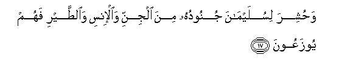
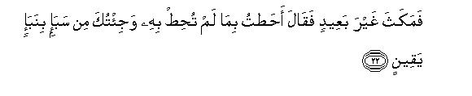
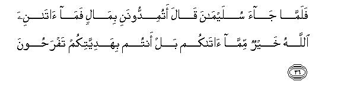
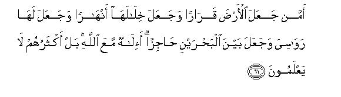
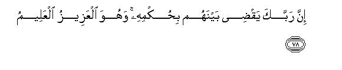

بسم الله الرحمن الرحيم
Sayyid Abul Ala Maududi - Tafhim al-Qur'an - The Meaning of the Qur'an
 27.
Surah An Naml (The Ant)
27.
Surah An Naml (The Ant)
The Surah takes its name from the phrase wad-in-naml which occurs in verse 18, implying that it is a Surah in which the story of An-Naml (the Ant) has been related.
The subject matter and the style bear full resemblance with the Surahs of the middle Makkan period and this is supported by traditions as well. According to Ibn Abbas and Jabir bin Zaid, "First the Surah Ash-Shu`araa' was sent down, then the Surah An Naml and then Al-Qasas."
The Surah consists of two discourses, the first from the beginning of the Surah to the end of verse 58, and the second from verse 59 to the end of the Surah.
The theme of the first discourse is that only those people can benefit from the guidance of the Quran and become worthy of the good promises made in it, who accept the realities which this Book presents as the basic realities of the universe, and then follow up their belief with obedience and submission in their practical lives as well. But the greatest hindrance for man to follow this way is the denial of the Hereafter. For it makes him irresponsible, selfish and given to worldly life, which in turn makes it impossible for him to submit himself before God and to accept the moral restrictions on his lusts and desires. After this introduction three types of character have been presented.
The first type is characterized by Pharaoh and the chiefs of Thamud and the rebels of the people of Lot, who were all heedless of the accountability of the Hereafter and had consequently become the slaves of the world. These people did not believe even after seeing the miracles. Rather they turned against those who invited them to goodness and piety. They persisted in their evil ways which are held in abhorrence by every sensible person. They did not heed the admonition even until a moment before they were overtaken by the scourge of Allah.
The second type of character is of the Prophet Solomon (peace be upon him), who had been blessed by God with wealth and kingdom and grandeur to an extent undreamed of by the chiefs of the disbelievers of Makkah. But, since he regarded himself as answerable before God and had the feeling that whatever he had was only due to Allah's bounty, he had adopted the attitude of obedience before Him and there was no tinge of vanity in his character.
The third type is of the queen of Sheba, who ruled over a most wealthy and well known people in the history of Arabia. She possessed all those means of life, which could cause a person to become vain and conceited. Her wealth and possessions far exceeded the wealth and possessions of the Quraish. Then she professed shirk, which was not only an ancestral way of life with her, but she had to follow it in order to maintain her position as a ruler. Therefore, it was much more difficult for her to give up shirk and adopt the way of Tauhid than it could be for a common mushrik. But when the Truth became evident to her, nothing could stop her from accepting it. Her deviation was, in fact, due to her being born and brought up in a polytheistic environment and not because of her being a slave to her lusts and desires. Her conscience was not devoid of the sense of accountability before God.
In the second discourse, at the outset, attention has been drawn to some of the most glaring and visible realities of the universe, and the disbelievers of Makkah have been asked one question after the other to the effect : "Do these realities testify to the creed of shirk which you are following, or to the truth of Tauhid to which the Qur'an invites you?" After this the real malady of the disbelievers has been pointed out, saying, "The thing which has blinded them and made them insensitive to every glaring reality is their denial of the Hereafter. This same thing has rendered every matter and affair of life non-serious for them. For, when according to them, everything has to become dust ultimately, and the whole struggle of life is purposeless and without an object before it, the truth and falsehood are equal and alike. Therefore, the question whether one's system of life is based on the right or wrong foundations, becomes meaningless for him."
But the discourse, as outlined above, is not meant to dissuade the Prophet and the Muslims from calling the obdurate and heedless people to the way of Tauhid; it is, in fact, intended to arouse them from their slumber. That is why in vv. 67-93 certain things have been said repeatedly in order to produce in the people a sense of the Hereafter, to warn them of the consequences of being heedless of it, and to convince them of its coining, like an eye witness of something, who convinces the other person of it, who has not seen it.
In conclusion, the real invitation of the Quran that is, the invitation to serve One Allah alone, has been presented in a concise but forceful manner, and the people warned that accepting it would be to their own advantage and rejecting it to their own disadvantage. For if they deferred their faith until they saw those Signs of God after the appearance of which they would be left with no choice but to believe and submit, they should bear in mind the fact that that would be the time of judgment and believing then would be of no avail.

In the name of Allah, the Compassionate, the Merciful.
[1-4] Ta. Sin. These are the verses of the Qur'an and the lucid Book,1 a guidance and good news2 for those believers who establish the Salat and pay the Zakat,3 and they are the ones who fully believe in the Hereafter.4 The fact is that We have made the misdeeds of those who deny the Hereafter seem fair to them; therefore, they stray about blindly.5
[5-6] They are the ones for whom there is an evil chastisement,6 and in the Hereafter they shall be the worst losers. And (O Muhammad), you are most surely receiving this Qur'an from the One, Who is All Wise, All-Knowing.7
[7-12] (Tell them the story of the time) when Moses said to the people of his house,8 "I have seen a fire: I may either bring some information from there or a burning brand so that you may warm yourselves."9 When he came to it, a voice called out,10 "Blessed is He Who is in the fire and the one who is around it. Glorified is Allah, Lord of the worlds.11 O Moses, this is I, Allah, the Almighty, the All-Wise: Just cast down your staff." No sooner did Moses see the staff writhing like a snake12 than he turned about and fled, without even looking behind. "O Moses fear not: the Messengers never feel afraid in My Presence,13 unless, of course, someone has committed an offense."14 Then, if after the evil, he changed (his act) into a good one, I am indeed All Forgiving, All-Merciful.15 And just put your hand into your bosom: it will come out shining, without any hurt. These (two Signs) are from among the nine Signs (you will take)16 to Pharaoh and his people: they are indeed a very wicked people."
[13-14] But when Our clear Signs came before those people, they said, "This is plain magic." They rejected those Signs out of sheer injustice and vanity, whereas in their heart of hearts they were convinced.17 See, then, what fate those mischief-makers met.

[15-19] (On the other hand,) We gave knowledge to David and Solomon,18 and they said, "Praise is for Allah Who exalted us above many of His believing servants."19 And Solomon succeeded David,20 and he said, "O people, we have been taught the speech of the birds,21 and we have been granted all sorts of things.22 This is indeed a great favor (of Allah)." For Solomon were gathered hosts of jinn and men and birds,23 which were kept under strict discipline. (Once he was marching in an expedition with them) until when they came to the valley of the ants, an ant said, "O ants, get into your holes lest Solomon and his hosts should trample you down without even knowing it."24 Hearing its words, Solomon laughed smilingly and said "O My Lord, restrain25 me so that I may render thanks to Thee for Thy favors which Thou hast bestowed upon the and my parents, and (enable me) to do such good works as may please Thee; and admit me, by Thy mercy, among Thy righteous servants."26

[20-26] (On another occasion) Solomon reviewed his birds27 and said, "How is it that I do not see the hoopoe? Has he disappeared somewhere? I will punish him severely, or even slaughter him, unless he presents before me a reasonable excuse”28 The bird did not take long when it came and said, "I have obtained knowledge of things of which you have no knowledge. I have brought sure information about Saba.29 There I have seen a woman ruling over her people: she has been given all sorts of provisions, and she has a splendid throne. I saw that she and her people prostrate themselves before the sun instead of Allah."30 Satan31 made their deeds seem fair to them,32 and hindered them from the highway: therefore, they do not find the right path that they may prostrate themselves before that God Who brings to light the hidden things of the heavens and the earth33 and knows all that you conceal and reveal.34 Allah: none but He is worthy of worship. He is the Owner of the glorious Throne.35

[27-28] Solomon said, "We shall just now see whether what you say is true, or that you are a liar. Take this letter of mine and cast it before them; then get aside and see what reaction they show."36
[29-31] The queen said, "O chiefs, a very important letter has been cast before me. It is from Solomon, and it begins with the name of Allah, the Merciful, the Compassionate. It says, `Do not adopt a rebellious attitude against me and present yourselves as Muslims before me."37
[32-35] (Having read out the letter) the queen said, "O chiefs, counsel me in this matter; I do not take a decision in any matter without (consulting) you."38 They replied, "We are a powerful people, and good fighters. The decision, however, rests with you. You may yourselves consider as to what command you should give." The queen said, "When the kings enter a land, they ruin it and debase its honorable people;39 they do just the same.40 I shall send to them a gift, and then wait to see with what reply my envoys return."

[36-37] When (the envoy of the queen) came to Solomon, the king said "Do you want to help me with wealth? What God has given me is much more than what He has given you41 May you yourselves rejoice in your gift! (O messengers,) go back to your people; we shall bring against them such forces42 which they will not be able to withstand, and we shall drive them out (of their land) humbled and disgraced."
[38-40] To his courtiers Solomon43 said, "Which of you can fetch me her throne before those people come to me in submission?"44 A mighty one from among the jinns submitted, "I shall fetch it to you even before you rise from your place.45 I possess the necessary power for it and am trustworthy."46 He who possessed knowledge of the Book, spoke out, "I will fetch it to you in the twinkling of an eye."47 As soon as Solomon saw the throne placed before him, he exclaimed: "This is by the Grace of my Lord so that He may test me (to see) whether I am grateful or ungrateful!48 And the one who is grateful is grateful only for the good of his own self; as for the one who is ungrateful, my Lord is All-Sufficient and Self-Exalted."49
[41-43] Solomon said,50 "Se her throne before her casually; let us see whether she reaches the truth, or she is one of those who are not guided aright."51 When the queen arrived, she was asked, "Is your throne like this?" She replied, "It is just the same.52 We had already known this and we had surrendered (or we had become Muslims)."53 The worship of the deities whom she served instead of Allah had hindered her (from believing), for she came of an unbelieving people.54
[44] She was asked to enter the palace. When she saw it, she thought it was a pool of water, so she tucked up her skirt to enter it. Solomon said, "It is the glossy floor of glass."55 At this she exclaimed, "O my Lord! I have (hitherto) been unjust to myself; now I submit myself, with Solomon, to Allah, Lord of the worlds."56
[45-47] And57 to Thamud We sent their brother Salih (with the message) that they should worship Allah, but they divided themselves forthwith into two wrangling groups.58 Salih said, "O my people, why do you hasten for the evil in preference to the good?59 Why don't you ask forgiveness of Allah? Maybe that you are shown mercy." They said, "We regard you and your companions as a sign of bad omen."60 Salih said, "Your good and bad omens issue forth from Allah. The fact is that you are a people on trial."61
[48-53] There were in that city nine ring-leaders of the men,62 who spread mischief in the land and reformed nothing. They said to one another, "Let us pledge on an oath by Allah that we shall attack Salih and his household by night, and then tell his guardian63 that we were not even present at the time his family were killed: we are telling the truth."64 They plotted thus, and We too devised a plot of which they were unaware.65 Just see how their plot ended. We annihilated them and all their people together. There, their houses lie desolate in consequence of their wicked deeds. There is a lesson in this for those who have knowledge;66 and We saved those who had believed and avoided disobedience.
[54-58] And We sent Lot.67 Remember the time when he said to his people, "Do you commit indecency while you see it?68 Do you leave women and seek men for the gratification of your sexual desire? The fact is that you are a people steeped in ignorance."69 But the only reply his people gave was to say, "Expel the family of Lot from your habitation: they pose to be very pious." At last We saved him and his family except his wife about whom We had decreed that she would linger behind,70 and rained on then a rain, an extremely evil rain for the people who had been warned.
[59] (O Prophet)71 say, "Praise is for Allah and peace upon those servants of His whom He has chosen."
(Ask them:) "Is Allah better or those deities whom they set up as His associates?"72
[60] Well, Who is He Who created the heavens and the earth and sent down rainwater for you from the sky, then caused to spring up by it beautiful gardens, whose trees you had no power to cause to grow? Is there besides Allah another god (who is His associate in these works)?73 (Nay,) but these people themselves have strayed from the right path.

[61] And Who is it Who made the earth as a place of rest74 and caused in it rivers to flow, and set in it firm mountains and placed barriers between the two bodies of water?75 Is there besides Allah another god (who is His associate in these works)? Nay, but most of these people have no knowledge.
[62] Who is it Who listens to the oppressed one when he invokes Him, and Who relieves him of his affliction?76 And (Who is it Who) makes you vicegerents in the earth?77 Is there besides Allah another god (to do this)? How little you reflect!
[63] And Who is it Who shows you the way in the darkness of the land and the sea,78 and Who sends the winds as harbingers of His mercy?79 Is there besides Allah another god (who does this)? Far exalted is Allah above what they associate with Him.
[64] And Who is it Who originates the creation and then reproduces it?80 And Who provides you sustenance from the sky and the earth?81 Is there besides Allah another god (who is a partner in these works) Say, "Bring your proof if you are truthful."82
[65] Tell them, "None but Allah has the knowledge of the unseen, in the heavens and the earth,83 and they (your deities) do not even know when they will be raised back to life."84
[66-69] But (on the contrary,) these people have lost the knowledge of the Hereafter;" nay, they are in doubt about it; nay, they are blind to it.85 The disbelievers say, "When we and our forefathers have become dust, shall we be really raised up from the graves? This news has been given to us as well as to our forefathers before us, but these are nothing but tales, which we have been hearing since the ancient times." Say to them, "Move about in the land and see what doom the criminals have met."86
[70-75] O Prophet, do not grieve for them nor feel distressed at their machinations.87 They say, "When will this threat be carried out if you are truthful?"88 Say, "No wonder that a part of the torment you wish to be hastened, may well have approached you."89 The fact is that your Lord is highly Gracious to the people, but most of them are not grateful.90 No doubt your Lord knows fully well what they keep hidden in their breasts and what they reveal.91 There is no secret thing in the heavens and the earth, which is not recorded in a clear Book.92

[76-81] The fact is that this Qur'an tells the children of Israel the reality of most of those things in which they differ,93 and this is a Guidance and a Mercy for the believers.94 (Likewise) your Lord will surely judge between these people95 as well by His Command, and He is the All-Mighty, the All-Knowing.96 Therefore, O Prophet, put your trust in Allah: you are certainly on the manifest Truth. You cannot make the dead to hear you,97 nor can convey your call to the deaf, who have turned their backs and are running away from you,98 nor can guide the blind against their errors.99 You can only make those people to listen to you, who believe in Our Revelations and then submit (to Us) completely.
[82-86] And when the time of the fulfillment of Our Decree approaches them,100 We . shall bring forth a beast for them from the earth, which will speak to them (about this) that the people did not believe in Our Revelations.101 And imagine the Day when We shall gather together from every community a host of those people who used to treat Our Revelations as false; then they will be arranged (according to their classification and merit) until when all of them will have arrived, (their Lord) will ask them, "Did you treat My Revelations as false whereas you did not comprehend them by knowledge?102 If not this, what else were you doing?"103 And the threat of the torment will be carried out on them in consequence of their wicked deeds; then they will not be able to utter a word. Did they not perceive that We had ordained the night for them to have rest in it, and made the day bright?104 Surely in this there were many Signs for those who believed.105
[87-90] And on the Day when the Trumpet will be blown, all those who are in the heavens and the earth, shall be struck with terror106 except those whom Allah shall be pleased to protect.-And all shall present themselves before Him in submission. Today, you see the mountains and think that they are firmly set, but on that Day they will be flying about like the clouds; this will be a manifestation of the powers of Allah, Who has ordered everything with wisdom. He is fully aware of what you do.107 He who will bring good deeds, will have a reward better than that,108 and such people shall be secure from the terror of that Day.109 And the one who will come with evil deeds, all such people shall be flung upon their faces into the Fire. Can you be rewarded except in accordance with your deeds?109a
[91-93] (O Muhammad, say to them:) "What I have been commanded is that I should worship the Lord of this City, Who has made it sacred, and Who is the Owner of every thing.110 I have been commanded to live as a Muslim and to recite the Qur'an." Now whosoever follows the guidance, will follow it for his own good, and to him who goes astray, say, "I am only a warner." Say to them, "Praise is only for Allah; very soon He will show you His Signs, which you shall recognize; and your Lord is not unaware of what you do."
1Kitab-i-mubin has three meanings: (1) This book presents its teachings and instructions and injunctions plainly; (2) it distinguishes between the Truth and falsehood clearly; and (3) its being a Divine Book is obvious: whoever studies it with open eyes will realize that it has not been composed and forged by the Holy Prophet himself.
2That is, the verses themselves are a "guidance" and "good news", because they give guidance and convey good news in a most excellent manner.
3That is, "These verses of the Qur'an give guidance and convey the good news of a good end only to those people who possess these two qualities: (1) They should affirm faith, that is, accept the invitation of the Qur'an and the Holy Prophet Muhammad (upon whom be Allah's peace and blessings), believe In one God as their only Deity and Lord, accept the Qur'an' as the Book of Allah, acknowledge the Holy Prophet as a true Prophet and their Leader, and also adopt the belief that after this life there is another life, in which man has to render his full account of deeds and be rewarded or punished accordingly. (2) They should not only profess faith verbally, but should also be inclined to follow and obey the Divine Commands practically, and the first indication of this inclination is that they should establish the Salat and pay the Zakat. The verses of the Qur'an will show the right way of life only to those people who fulfill these two conditions; they will explain to them the difference between the right and the wrong at every stage on the way, protect them against the wrong ways at every turn of the way, and bless them with the satisfaction that whatever be the consequences of following the Right Way in the world, in the Hereafter they will certainly attain the eternal and everlasting success and the good will of Allah only through it. For in order to derive full benefit from the teaching of a teacher, one has first to have faith in him, then accept to be his student, and then work according to his instructions. Similarly, a patient who wants to be benefited by a doctor has first to accept him as a physician, and then follow his instructions with regard to medical dosage, prevention, etc. Then only he can assure the patient of the desired results.
Some people have interpreted the words yu'tun-az-zakat in this verse to mean that they should adopt moral purity. But, wherever in the Qur'an the word ita-i-zakat has occurred along with the word iqamat-i-salat, it means payment of the Zakat, which is the second pillar of Islam after the Salat. Moreover, the Qur'an has used the word tazakka for adopting piety and purity and not ita' which is specifically used for the payment of the Zakat. In fact, what is meant to be impressed here is this: In order to benefit fully by the guidance of the Qur'an, it is imperative that one should adopt the attitude of submission and obedience in practical life as well after the affirmation of the Faith, and the establishment of the Salat and the payment of the Zakat is the first indication that one has actually adopted such an attitude. If there is no such indication, it will become obvious that one is rebellious: he might have acknowledged a ruler as such, but he is not inclined to carry out his commands.
4Although belief in the Hereafter is an article of the Faith, and a believer will also believe in it along with believing in Tauhid and the Prophethood, here it has been specially mentioned separately in order to bring out its unique importance. The object is to impress that for those people who do not believe in the Hereafter, it is impossible to follow, even tread, the way taught by the Qur'an. For the people of this way of thinking naturally determine their criterion of good and evil by the results that appear, in this world. For them it is not possible to accept any admonition or guidance which seeks to determine the good and evil by the criterion of the gain and loss in the Hereafter. Such people in the first instance do not at all heed the teachings of the Prophets, but if for some reason, they also get included among the believers, they find it difficult to take even the initial steps on the way of the Faith and Islam because of the lack of faith in the Hereafter. For as soon as they will encounter the first situation where the demands of the worldly gains and the losses of the Hereafter will pull them in opposite directions, they will freely allow themselves to be pulled towards the worldly gains without caring in the least for the losses of the Hereafter, even though they may be making all sons of claims to be the believers.
5That is. "This is God's Law of Nature and the natural logic of human psychology that when man thinks that the results of his life's struggle are confined to this world only when he does not believe in the existence of any court where his life's work has to be scrutinized and judged finally for good and evil, and when he does not believe in any life hereafter when he will be requited strictly in accordance with the real worth of his life's deeds, he will inevitably develop in himself a material outlook on life, and every kind of conflict between the Truth and falsehood, good and evil, morality and immorality, will appear utterly meaningless to him. Then, whatever earns him pleasure and enjoyment, material progress and prosperity, power and authority, will be the good for him, no matter it be any philosophy of life, any way of life and any system of morality. He will have no concern for truth and reality. His real ambition will be to win successes and earn adornments only of this worldly life, and their pursuit will lead him astray into every valley. Then, whatever he does with this object in view. will be a thing of beauty for him, and he will regard all those others as foolish, who are not absorbed like him in seeking the world, and doing anything and everything without any moral qualm and inhibition.
6Nothing definite has been said about the form, time and place of this "evil chastisement." For it is imposed in this world also on different persons and groups and' nations in countless different ways; a part of it is also experienced by the wicked when they are about to leave the world; man experiences it also in the intermediary state between death and Resurrection; and then after Resurrection it will become endless and everlasting.
7That is, the things being mentioned in the Qur'an are not imaginary nor are they based on the presumptions and opinions of a man, but they are being revealed by the One Who is All-Wise and All-Knowing, Who is perfect in Wisdom and Knowledge, Who has full knowledge of the affairs of His creation and of its past and present and future, and Whose Wisdom devises the best schemes for the reform and guidance of His servants.
8This happened at the foot of Mount Tur when the Prophet Moses (peace be upon him) was traveling along with his family in search of a suitable place for settlement, after passing eight to ten years in Madyan (Midian). From Madyan, whose territory lay on both sides of the Gulf of `Aqabah, on the sea-shores of Arabia and the Sinai Peninsula, he reached the place called Mt. Sinai and Jabal Musa in the southern part of the Peninsula, which at the time of the revelation of the Qur'an was well known as Tur. (See also The Meaning of Qur'an, Vol. VIII Ash-Shu'araa', E.N. 115). The details of this story have already been given in Surah Ta Ha: 9-24 above and will, follow in Surah Al-Qasas: 29-36 below.
9The context shows that it was a cold wintry night and the Prophet Moses was passing through unfamiliar land. Therefore, he said to his family, "Let me go and find out what habitation it is where a fire is alight, and get some information about the traveling routes and the nearby habitations. I shall at least bring a few embers for you to light a fire and warm yourselves."
The place where the Prophet Moses had seen a burning bush is situated at about 5,000 ft. above sea level at the foot of Mt. Tur. Constantine, the first Christian Emperor of the Roman Empire, had a church built in about 365 A.D. right at the spot where this event had occurred. Two hundred years later Emperor Justinian had a monastery built which included the church built by Constantine as well. Both the monastery and the church stand even today and are under the control of the monks of the Greek Orthodox Church.
10According to AI-Qasas: 30, the voice was calling out from a tree. What one understands from this is this: A sort of a fire was alight on the ground on the edge of the valley, but neither was anything burning nor any smoke arising. In the midst of the fire there stood a lush green tree from which a voice started calling out this all of a sudden.
This is a strange thing which the Prophets of Allah have been experiencing. When the Holy Prophet Muhammad (may Allah's peace be upon him) was first blessed with Prophethood, an Angel appeared before him in the solitude of the Gave of Hira' and started delivering Allah's Message. A similar thing happened with the Prophet Moses also. A journeying person has halted at a place, sees a fire at a distance, approaches it in order to get some information abort the route, or to pick a burning ember, and suddenly Allah, Lord of the Worlds, the Infinite, the Inconceivable Being, starts speaking to him. On such occasions, there exists externally as well as within the Prophets' own selves an extraordinary state which fills them with the assurance that it is not a jinn or a satan or an illusion of their own mind, nor are their senses being deceived, but it is the Lord of the universe, or His Angel, who is speaking to them. (For further explanation, see E.N. 10 of An-Najm).
11Here the use of the words Subhan Allah (glorified is Allah) is meant to warn the Prophet Moses to this effect: "You should never think that Allah, Lord of the universe, is sitting in the tree, or has entered into it, or that His absolute Light has concentrated itself into the limited sphere of your sight, or some tongue is functioning in some mouth to produce speech, but it is Allah, Who is Pure and Free from all such limitations, Who is Himself speaking to you."
12In Surahs Al-A`raf and Ash-Shu`araa', the snake has been called thu`ban (a large serpent) but here jaann, a small snake. The reason is that in physical size it was a serpent but in movement it was swift like a small snake. The same thing has been expressed by hayyatun tas `a (a running snake) in Ta Ha: 20.
13That is, "In My Presence there is no danger of any harm to the Messenger. When I call someone into My Presence to appoint him to the high office of Prophethood, I Myself become responsible for his safety. Therefore, the Messenger should remain fearless and confident in every kind of unusual situation: it will never harm or hurt him in any way. "
14This exception can be contiguous as well as remote. In the first case it will imply that there can be a genuine cause of fear if the Messenger has committed an offense; in the second case it will mean: "None should have any cause of fear in My Presence, unless, of course, someone has committed an offense."
15That is, "If even an offender repents and reforms himself and does good instead of evil, I will pardon him. ¦ This implied both a warning and a good news. The Prophet Moses had killed a Copt inadvertently and fled from Egypt. This was an offense to which a subtle reference was made. When this offense was committed un-intentionally by the Prophet Moses, he had immediately offered repentance to Allah, saying, "O my Lord! I have sinned against myself, so forgive me." So, "Allah forgave him" there and then. (Al-Qasas: 16). Here the good news of the same forgiveness has been given him, as if to say, "O Moses, there could be a genuine cause for you to feel afraid in My Presence, because you had committed an offense, but when you have changed the evil into good, I have nothing but forgiveness and mercy for you. I have not called you here at this time to punish you, but I am going to send you on a great mission with wonderful miracles."
16According to Surah Bani Isra'il:101, the Prophet Moses had been granted nine clearly visible Signs, which according to the details given in AI-A`raf were the following: (1) The staff's turning into a serpent, (2) the shining hand when it was drawn out of the armpit, (3) public triumph over the magicians, (4) occurrence of a widespread famine in the land as foretold by the Prophet Moses, (5) the storm, (6) the locusts, (7) the incidence of weevils in the grain stores and of lice among human beings and animals, (8) the frogs, and (9) the rain of blood. (Far explanation, see E.N. 43 of Az Zukhruf).
17As mentioned at other places in the Qur'an, whenever a plague befell Egypt as foretold by the Prophet Moses, Pharaoh would say, "O Moses, pray to your Lord to remove this plague; then we shall submit to what you say." But as soon as the plague was removed, Pharaoh would break his promise. (Al-A'raf: 134, Az-Zukhruf: 49-50). The Bible also has mentioned it (Exodus. 8 to 10), and otherwise also it could not be imagined that the occurrence of a famine throughout the country and the coming of a violent storm and the incidence of the locusts and the frogs and the weevils in such abundance could be due to any trick of magic. The miracles were so manifest that even a stupid person could not help realizing that the occurrence of the plagues on such a large scale and their removal at the Prophet's prayer could be only due to Allah, Lord of all Creation's power and authority. That is why the Prophet Moses had told Pharaoh plainly: "You know it full well that none but the Lord of the heavens and the earth has sent down these Signs." (Bani lsra'il:102). But the reason why Pharaoh and his chiefs rejected Moses knowingly was: "What! should we believe in these two men who are human beings like ourselves and whose people are our bondsmen'?" (Al Mu'minun: 47)
18That is, the knowledge of the Reality, the knowledge that whatever they have is not theirs but the gift of Allah and whatever rights they have been granted over those things should be used strictly according to Allah's will, for they will be held answerable before Allah, the real Owner, for the right and wrong use of those rights. This knowledge is the opposite of the ignorance in which Pharaoh was involved. The type of character built on the ignorance has been presented in the preceding verses. Now, in the following verses, the model of the character built on the knowledge is being presented. The sort of kingdom, wealth, power and grandeur were common on both the sides. The Pharaoh had been given these as well as the Prophets David and Solomon. But the distinction of the ignorance and the knowledge built and molded them into entirely different personalities.
19That is, "There were other believing, servants as well, who could be blessed with vicegerency. But it is only Allah's favor, not due to any special quality in ourselves, that He has chosen us to be rulers over this kingdom."
20Succession here does not mean inheritance of wealth and properties, but the succession to the Prophet David in the Prophethood and vicegerency. For the wealth and possessions, if at all transferred, could not be transferred to the Prophet Solomon only, because Prophet David had other children also. Therefore, this verse cannot be cited to refute the Hadith reported from the Holy Prophet, saying, "The inheritance left by us, the Prophets, is not divided as such. whatever we leave behind is charity." (Bukhari) And: "There is no heir to a Prophet. Whatever he leaves behind, is divided among the needy and the indigent of the Muslims." (Musnad Ahmad. Traditions from Abu Bakr, Ahadith No. 60 and 78).
The Prophet Solomon was the youngest son of the Prophet David. His Hebrew name Solomon is a synonym of Salim (right-minded, affable). He succeeded the Prophet David in 965 B.C. and ruled his kingdom for forty years, till 926B.C. For other details of his life and works, see E. N.'s 74-75 of Al Anbiyaa in The Meaning of the Qur'an, Vol. VII). Our commentators have greatly exaggerated' the vastness of his kingdom, and have held that he ruled over a large part of the world. The fact, however. is that his kingdom comprised only the present Palestine and Transjordan and a part of Syria. (See Map: Kingdom of the Prophets David and Solomon, The Meaning of the Qur'an, Vol. II, Bani Israel E. N. 7).
21There is no mention in the Bible that the Prophet Solomon had been taught speech of the birds and animals, though the Israelite traditions contain a reference to it. (Jewish Encyclopedia, Vol. Xl.p. 598)
22That is, "Allah has bestowed on us all sorts of things." This, however, should not be understood literally; it only means the abundance of the wealth and the means of life granted by Allah. This was not said proudly by Prophet Solomon but only to express his gratitude to Allah for His grace and bounty and favors.
23The Bible does not either make any mention that there were jinns also in the Prophet Solomon's armies, and he took service from them; but the Talmud and the rabbinical traditions contain details of this. (Jewish Encyclopedia, Vol. XI, p. 440). Some of the present-day writers have strained every nerve to prove that the words jinn and fair do not refer to the jinns and birds but to men who performed different duties in the Prophet Solomon's army. They say that the Jinn haply the people of the mountain tribes whom Prophet Solomon had subdued and who performed teats of great strength and skill under him; and fair implies cavalry which could move much faster than the infantry. But these are indeed the worst examples of misinterpreting the Qur'an. The Qur'an here mentions three distinct kinds of the army consisting of the men, the jinns and the birds, and all the three gave been qualified by the prefix a1 (alif-lam) to denote a class. Therefore, al jinn and al-tair could not be included in al-ins (the men), but could be two separate and different classes from the men. Moreover, a person who has a little acquaintance with Arabic cannot imagine that in this language the mere word a/ Jinn could ever imply a group of the men, or al-tair troops mounted on horses, nor could any Arab understand these meanings from these words. Calling a man a jinn only figuratively because of some supernatural feat of his, or a woman a fairy because of her beauty, or a fast moving person a bird dces not mean that the words Jinn and fairy and bird will henceforth be taken to mean a powerful man and a beautiful woman and a fast moving person respectively. These are only the metaphoric and not the real meanings of these words. In a discourse, a word is used in its figurative instead of its real meaning, and the listeners also will take it in that meaning, only when there exists in the context a clear pointer to its being figurative. What, after all, is the pointer in the context here from which one may understand that the words jinn and tair have been used not in their real and lexical meaning but in their figurative meaning? Contrary to this, the work and the state of a member each of the two groups that have been mentioned in the following verses, fall entirely against the purport of this interpretation. If a person does not want to believe in something stated in the Qur'an, he should frankly say that he does not believe in it. But it would be moral cowardice and intellectual dishonesty if one should force the clear words of the Qur'an to give the meaning that he wants them to give, and tell the world that he believes in what the Qur'an says, whereas he does not, in fact, believe in it but believes in his own distorted meaning.
24This verse also has been greatly misconstrued by some commentators of the present day. They say that wad-in naml does not mean "valley of the ants", but it is the name of a valley that was in Syria, and namlah does not mean an ant but it is the name of a tribe. Thus, according to them, the verse means this: "When the Prophet Solomon reached the valley of the ants, a Namilite said, 'O people of the Naml tribe ......" But this also is an interpretation which is not supported by the words of the Qur'an. Even if we took wad-in-naml to be the name of a valley and supposed that it was inhabited by the tribe of Bani an-Naml, it would be against the Arabic idiom and usage to speak of a member of the tribe as namlah. Although there are many Arab tribes which have been named after the animals, e.g. Kalb (dog), Asad (lion), etc"., yet no Arab would ever say in respect of a member of the Kalb or the Asad tribe: "A dog said, or a lion said, etc. Therefore, it would be against the Arabic idiom to say in respect of a member of the Naml tribe: "A namlah (ant) said this." Then a member of the Naml tribe's warning the people of his tribe, saying, "O Namilites, get into your houses lest Solomon's hosts should trample you down without even knowing it," becomes meaningless, It has never happened that an army of men should have trampled down a group of men without knowing it. If the army has come with the intention of an attack, it would be useless for the other side to get into their houses, for in that case the invaders would follow them into their houses, and trample them more ruthlessly. And if the army is only on the routine march, it is just enough to clear off the way for it. Human beings may be harmed by the marching columns, but it can never happen that the soldiers on the march would trample down other men without knowing it. Therefore, if Bani an-Naml were a tribe of human beings, and one of its members were to warn his people, then in case of an attack, he would have said, "O Namilites, flee your houses and take refuge in the mountains lest Solomon's armies should destroy you. " And in case there was no danger of an attack, he would have said, "O Namilites, clear off the way lest one of you should be harmed by the marching columns of Solomon's armies."
This error in the interpretation is on account of the Arabic idiom and the subject-matter. As for the name of the valley and the tribe of Bani an-Naml inhabiting it, it is a mere hypothesis for which there exists no scientific proof. Those who hold that wad-in -naml was the name of a valley have themselves pointed out that it had been so named because of the abundance of ants in it. Qatadah and Muqatil say, "It is a valley in the land of Syria where ants are found in abundance. But in no book of history and geography and in no archaeological research it is mentioned that it was inhabited by a tribe called Bani an-Naml. Thus, it is merely a concoction that has been invented to support one's own interpretation.
This story is also found in the Israelite traditions but its latter portion falls against the Qur'an as well as against the regal dignity of the Prophet Solomon. According to it, when the Prophet Solomon was passing through a valley which abounded in ants, he heard an ant calling out to the other ants to say, "Get into your holes, otherwise you will be trampled down by Solomon's hosts." At this, Prophet Solomon displayed great vanity before the ant to which the ant rejoined, " What are you?-the product of a mere sperm-drop! " Hearing this the Prophet Solomon felt greatly ashamed. (Jewish Encyclopedia, Vol. X1, p. 440). This shows how the Qur'an corrects the wrong traditions of the Israelites, and cleanses the filthy spots with which they had themselves branded the characters of their Prophets. It is these traditions about which the Western orientalists shamelessly claim that the Qur'an has plagiarized them for its narratives.
Rationally also it is not at all inconceivable that an ant should warn members of its' own species of an impending danger and tell them to get into their holes. As for the question as to how the Prophet Solomon heard it, the answer is: It is not all difficult to understand the crude speech of an ant for a person whose senses can comprehend and receive a subtle message like the Word of Revelation
25"Restrain me...thanks to Thee" means this: "O my Lord! the wonderful powers and abilities that You have given me are such that if I become even a little forgetful and heedless, I might transgress the bounds of service and be puffed up with pride and go astray. Therefore, O my Lord, restrain me so that I may remain grateful to You for all Your blessings instead of being ungrateful."
26"Admit me..righteous servants" probably implies this: "I should be included among the righteous in the Hereafter and should enter Paradise along with them." For a person who does righteous acts will automatically be righteous, but one's entry into Paradise in the Hereafter cannot come about merely on the strength of one's good works, but it will depend on Allah's mercy. According to a Hadith, the Holy Prophet once said, "Merely the deeds of any one of you will not enable him to enter Paradise." It was asked, "In your case too, O Messenger of Allah?" He replied, "Yes, I also shall not enter Paradise only on the strength of my deeds, unless Allah Almighty covers me with His mercy."
This prayer of the Prophet Solomon on this occasion becomes irrelevant if an Naml is taken to mean a vibe of human beings and namlah a member of that tribe. After all, there could be nothing extraordinary in the warning given by a member of a human tribe to the people of his vibe about the approaching troops of a powerful king that it should have induced the king to make such a prayer to Allah. However, a person's having such a wonderful power of comprehension that he may hear the speech of an ant from a distance and also understand it, is certainly something extraordinary, which can involve a person in self-conceit and vanity. In such a case only the prayer of the Prophet Solomon can be relevant."
27That is, the birds whose troops, as mentioned above, were included in the armies of Prophet Solomon like the troops of the men and jinns. It is just possible that the Prophet Solomon had employed them for communicating messages, hunting and performing other such services.
28Some people of the modern time say that the hud-hud (hoopoe) does not mean the bird commonly known by this name, but is the name of a man who was an officer in the army of Solomon. This claim is not based on any historical research in which they might have found a person named hud-hud included in the list of the officers of the government of the Prophet Solomon, but they base their claim on the argument that the custom of naming human beings after animals is prevalent in Arabic as in other languages and was also found in Hebrew. Moreover, the, work that has been ascribed to the hud-hud in the following verses and its conversation with the Prophet Solomon, can, according to them, be only performed by a human being. But if one keeps in view the context in which this thing occurs in the Qur'an, it becomes evident that this is no commentary of the Qur'an but its distortion. After all, why should the Qur'an put the intellect and intelligence of man to the test by using enigmatic language '? Why should it not clearly say that a soldier of the Prophet Solomon's cavalry, or platoon, or communication department, was missing, whom he ordered to be searched out, and who came and gave this news and whom he dispatched on such and such a mission? Instead, it uses such language that the reader, from the beginning to the end, is compelled to regard it as a bird. Let us, in this connection, consider the tarts in their sequence as presented in the Qur'an.
First of all, the Prophet Solomon expresses his gratitude to Allah for His this bounty: "We have been taught the speech of the birds." In this sentence, firstly, the word Lair has been used absolutely which every Arab and scholar of Arabic will take in the meaning of a bird, because there is nothing in the context that points to its being figurative; secondly, if tair implied a group of men and not a bird, the ward language or tongue would have been used concerning it and not speech. 'Then, a person's knowing the tongue of another people is not so extraordinary a thing that it should be specially mentioned. Today there are among us thousands of men and women, who can speak and understand many foreign languages. This is in no way an unusual achievement which may be mentioned as an extraordinary gift of God.
Then the Qur'an says, "For Solomon were gathered hosts of jinns and then and birds." In this sentence, firstly, the words Jinn and ins (men) and tair have been used as names for three well-known and distinct species denoted by these words in Arabic. Then they have been used absolutely and there is nothing in the context that may point to any of them being used metaphorically, or as a simile. hecause of which one may take them in another meaning than their well- known lexical meaning. Then the word ins has occurred between the words jinn and Lair which does not allow taking it in the meaning that the Jinn and the tair were, in tact, two groups included in the species of ins (men). Had this been meant the words would have been: ul jinn wat-tair min-al-ins and not min-al- Jinn wal-ins Wat-tair.
A little further un the e Qur'an says that the Prophet Solomon said this when-during his review of the birds hr found the hud-hud missing. If the fair were human beings and hud-hud also was the name of a man, a word or two should Dave been there to indicate this so that cite poor reader should not have taken the word for a bird. When the group being mentioned is clearly of the birds and a number of it is called hud-hud. how can it be expected that the reader will of his own accord understand them to be human beings'?
Then the Prophet Solomon says, "I will punish him severely, or even slaughter him, unless he presents before me a reasonable excuse." A man is killed, or hanged, or sentenced to death, but never slaughtered. Some hard-hearted person may even slaughter another person out of vengeance, but it cannot be expected of a Prophet that he would sentence a soldier of his army to be slaughtered only for the offense of desertion, and Allah would mention this heinous act of the Prophet without a word of disapproval.
A little further on we shall again see that the Prophet Solomon sends the same hud-hud with a letter to the queen of Sheba and tells him "to cast it before her". Obviously, such an instruction can be given to a bird but not at all to a man when he is sent as an envoy or messenger. Only a foolish person will believe that a king would send his envoy with a letter to the queen of another country and tell him to cast or throw it before her. Should we suppose that the Prophet Solomon was not aware of the preliminary social etiquette which even common people like us also observe when we send our servant to a neighbor? Will a gentleman tell his servant to carry his letter to the other gentleman and throw it before him?
All these things show that the word hud-hud here has been used in its lexical meaning, showing that he was not a man but a bird. Now, if a person is not prepared to believe that a hud-hud can speak those things that have been ascribed to it in the Qur'an, he should frankly say that he does not believe in this narrative: of the Qur'an. It is sheer hypocrisy to misconstrue plain and clear words of the Qur'an according to one's own whims only in order to cover up one's lack of faith in it.
29Saba' were a well-known commercial people of southern Arabia, whose capital city of Ma'rib lay about 55 miles to the north-east of San`a', the present capital of Yaman. They rose to power after the decline of the Minaean Kingdom in about 1100 B.C. and flourished for a thousand years in Arabia. Then in 115 B.C. they were replaced by the Himyarites, the other well-known people of southern Arabia, who ruled Yaman and Hadramaut in Arabia and Habash in Africa. The Sabaeans controlled the whole trade that passed between eastern Africa, India, the Far East and Arabia itself, on the one hand, and Egypt, Syria, Greece and Rome on the other. That is why they were famous for their wealth in the ancient times; so much so that according to the Greek historians they were the richest people of the world. Besides trade and commerce, another great reason for their prosperity was that they had built dams here and there in their country to store rainwater for irrigation purposes, which had turned their whole land into a veritable garden. The Greek; historians have made mention of the unusual greenery of their country; and the Qur'an also refers to it in Surah Saba': 15.The statement of the hud-hud, `I have obtained knowledge of things of which you have no knowledge", does not imply that the Prophet Solomon was wholly unaware of Saba'. Obviously, the ruler of Syria and Palestine whose kingdom extended to the northern shores of the Red Sea (Gulf of `Aqabah), could not be unaware of a people who ruled the southern shores (Yaman) of the same Red Sea, and who also controlled an important pan of the international trade. Moreover, according to Psalms, Solomon's father, Prophet David, knew Saba' We lied the following words of his prayer in Psalms
"Give the king thy judgment, O God, and thy righteousness unto the king's son (i.e. Solomon)... The kings of Tarshish and of the isles shall bring presents: the kings of Sheba and Seba (i.e. of Yaman's and Habash's branches) shall offer gifts." (72: 1-2, 10-11).
Therefore, what the hud-hud means to say is this: "The knowledge of the things 1 have seen with my eyes in the central city of the Sabaeans. has not yet reached you."
30This shows that the people of Saba' at that lime followed the religion of sun-worship, which is also supported by the ancient traditions of Arabia. Ibn ishaq has cited the genealogists' saying to the effect that Saba' have in fact descended from an ancestor whose name was `Abd Shams (slave of the sun, or sun-worshiper) and title Saba'. This is supported by the Israelite traditions as well. According to these when the hud-hud arrived with the Prophet Solomon's letter, the queen of Sheba was going for the worship of the sun-god, and it threw the letter on the way before the queen.
31The style shows that the sentences from here to the end of the paragraph are not a part of the hud-hud's speech but its speech ended with: "they prostrate themselves before the sun", and these words are an addition by Allah to its speech. His opinion is supported by the sentence: "He knows all that you conceal and reveal." These words give the impression that the speaker and the addressees here are not he hud-hud and the Prophet Solomon and his courtiers respectively, but the speaker is Allah and the addressees the mushriks of Makkah, for whose admonition this story has been related. From among the commentators, Allamah Alusi;, the author of Ruh-al-Ma ani, also has preferred the same opinion.
32That is, Satan has made them believe that earning the worldly wealth and making, their lives more and more grand and pompous is the only real and fit use of their mental and intellectual and physical powers. Apart from these, they need not think seriously on anything else: they need not bother themselves to see whether there was any factual reality behind the apparent life of the world or not, and whether the basis of their religion, morality, culture and system of life accorded with that Reality or went utterly against it. Satan satisfied them that when they were making adequate progress in respect of wealth and power and worldly grandeur, they had no need to see whether their beliefs and philosophies and theories were correct or not, for the only proof of their being correct was that they were earning wealth and enjoying life to their hearts content.
33That is, He is bringing continuously into existence those things which before their ' birth were hidden here and there: He is bringing out continuously countless kinds of vegetation and minerals from the bowels of the earth: He is manifesting from upper space such things as could not even be conceived by the human mind before their manifestation.
34That is, His knowledge embraces everything; the open and hidden are alike for Him; He is aware of everything. By citing these two attributes of Allah the object is to impress that if they had not been deluded by Satan, they could have seen the right way clearly: they could have perceived that the hot burning sphere of the sun which has no sense of its own existence, did not deserve to be worshiped but worship was due to Him alone Who is the All-Knowing and the All-Wise Being, and Whose power is bringing into existence new and ever stew phenomena every moment.
35This is one of those verses of the Qur'an, whose recital makes it obligatory for one to perform a Sajdah (prostration), and there is a consensus on this of the Muslim jurists. The object of performing a Sajdah here is that a believer should set himself apart from the sun-worshipers and should declare by his action that he does not regard the sun but Allah Almighty alone as his Deity and Lord.
36Here ends the role of the hud-hud (hoopoe). The rationalists deny its being a bird for the reason that a bird could not possibly be endowed with such powers of observation, discrimination and expression that it should pass over a country and should come to know that it is the land of Saba`, it has such and such a system of government, it is ruled by a certain woman, its religion is sun worship, that it should have worshiped One God instead of having gone astray, and then on its return to the Prophet Solomon it should so clearly make a report of all its observations before him. Due to these very reasons the open atheists object that the Qur'an is a book of fables and legends; then those who try to interpret the Qur'an rationally misconstrue its clear words in order to prove that the hud-hud was not at all a bird but he was a man. But the question is: What scientific information have these gentlemen got by which they could tell with absolute certainty what powers and abilities the different species of animals and their different individuals have got? The information that they possess only consists of the results interred froth the grossly insufficient observation made cursorily by them of the life and behavior of the animals. In fact, man has not so far been able to know through any certain means what different animals know and what they see and hear. and what they feel and think and understand, and how the mind of each one of them works. Yet, whatever little observation has been made of the life of the different species of animals, it has revealed some of their wonderful abilities. Now, when Allah, Who is the Creator of these animals, tells us that He had taught the speech of the birds to one of His Prophets and blessed him with the ability to speak to them, and the Prophet's taming and training had so enabled a hud-hud that it could make certain observations in the foreign lands and could report theta to the Prophet, we should, in fact, be prepared to revise our little knowledge about the animals in the light of Allah's statement. But, instead, we commit the folly of taking our this insufficient knowledge as the criterion and belie this statement of Allah or distort it out of its true meaning.
37That is, "The letter is important for several reasons: (1) It has reached me in an unusual way. Instead of an envoy it has been brought and dropped at me by a bird. (2) It is from Solomon, the great ruler of Palestine and Syria. (3) It has been begun with the name of Allah, the Compassionate, and Merciful, which is an unusual way of correspondence and is not followed by any kingdom in the world. (4) Then, it is also unusual that a letter should be written only in the name of Allah, the Exalted, spare from all other gods and goddesses. (5) The most important thing in it is that it quite clearly and plainly invites us to give up rebellion and adopt obedience and present ourselves before Solomon in submission (or as Muslims)."
"Present yourselves as Muslim" can have two meanings: (I) "Present yourselves in submission"; and (2) "present yourselves as Muslims (after embracing Islam)." The first meaning is in accordance with the Prophet Solomon's position as a ruler, and the second with his position as a Prophet. Probably this comprehensive word was used in order to convey both the meanings through the letter. The same sort of invitation has always been extended by Islam to independent nations and governments that they should either accept Islam and become equal partners in the Islamic system of life, or surrender political independence and submit to the system of Islam and pay Jizyah"
38The words used in the Text are: hatta tash-hu-dun (unless you are present, or unless you bear witness). That is: "I regard your presence necessary when I take a decision in important matters, and also that whatever decision I take you should be there to testify that it is right and correct." This shows that though the system of government among Saba' was kingship, it was not tyrannical; but the ruler of the time decided matters in consultation with the important people in the government.
39In this one sentence a thorough criticism has been made of imperialism. The kings' invasion of the other countries and the victorious nations' violence against the oppressed nations has never been for the sake of reform and goodwill. 'fire object has been to control and exploit the means and resources of sustenance granted to the other nation by God, and make it so helpless that it should never be able to rise in resistance and demand its share. For this purpose they block up all it, means of prosperity, power and honor, crush down all self respecting elements, instill in its members attitudes of slavery, flattery, treachery and spying against one another, imitation of the conqueror and respect for his civilization, contempt of their own civilization and other such mean qualities of character. Thus, gradually they bring them down to such a low level of character where they may not hesitate even to sell off any of their most sacred objects of heritage and be ready to perform any wretched service on payment.
40This sentence has two meanings and both are equally probable: (1) It may be a part of the queen of Sheba's speech, which she might have added in order to emphasize her foregoing words; and (2) it may be Allah's words which have been added as a parenthesis in support of the queen's speech.
41This sentence is not meant to express pride and vanity. What it means to say is this: "I have no desire for your wealth; I only desire that you should believe, or at least submit to a righteous system. if you agree to neither of these alternatives, it is not possible for me to accept the bribes of wealth and leave you tree in the , matter of a polytheistic and wicked system of life. What my Lord has given me is enough for me to cherish any desire for your wealth.
42There is a subtle gap between this and the previous sentence, which one can easily till up by a careful study of the discourse. It means this: "O Messengers, take ties gift back to the people who nave sent you. They will either have to yield to our first proposal, i. e. they should come before us as Muslims, or we shall bring forces against them."
43The details of the story that have been omitted are to the effect: The envoys returned to the queen with the gift and made a report of what they had seen and heard; the queen decided on the basis of what she heard about the Prophet Solomon to make a visit to Jerusalem to see him personally; she left Saba' for Palestine accompanied by her royal entourage and Sent a message to Solomon's court that she was herself coming to personally hear the invitation from the king himself and to have a direct talk with him. Here, the story is resumed from the time when the queen had reached near Jerusalem and was going to appear before Solomon in a day or two.
44That is, the same throne about which the hoopoe (hud- hud) had reported, "She has a splendid throne." Some commentators have given a strange interpretation here. They say that the Prophet Solomon wanted to have the throne before him before the queen's arrival because he wanted to take possession of it. For he feared that if the queen became a Muslim. it would be unlawful to take possession of her property without her approval: therefore, he made haste to have the queen's throne with him even before her arrival in Jerusalem because at chat time it was lawful to take it into his possession. May Allah pardon us! This is a strange concept about the intention of a Prophet. Why should one not understand the verse in the light that Prophet Solomon wanted to show a miracle also to the queen and her courtiers besides preaching his message so that she might know what extraordinary powers Allah, Lord of the worlds, had granted His Prophet so that she might be convinced that Solomon was surely a Prophet of Allah`? Some modern commentators have put an even more strange meaning on this verse. They translate the verse thus: "Which of you can bring me a throne for the queen:'" whereas the Qur'an has used the word bi- 'arshi-ha which means "her throne', and not bi-'arshil,-laha, "a throne for her". They mistranslate the verse in order to get rid of what the Qur'an has stated that the Prophet Solomon wanted the queen's own throne to be brought froth Yaman to Jerusalem and that too before the queen's arrival.
45From this it becomes obvious whether the jinns under the Prophet Solomon were, according to the interpretation of some rationalist commentators of the modern times, from among mankind or from among the hidden creation commonly known as jinns. Obviously, the sitting of the Prophet Solomon's court would at the most be of three to four hours, and the distance of Ma'rib, capital of Saba', from Jerusalem was even as the crow dies, not less than 1500 miles. To fetch a splendid throne of a queen from such a distant place in such a short time could not be possible for a man, even if he be a very strong and robust person. This task cannot be performed even by a jet plane of today. The throne was not lying in a jungle from where it had just to be fetched. It lay in a queen's palace, which must have been well-guarded, and in the absence of the queen it must have been kept in a secure place If a man had gone to fetch it, he should have been accompanied by a commando force so that he could overwhelm the guards and snatch away the throne. How could all this be accomplished before the rising of the court? This thing can be conceived only in connection with a real Jinn !
46That is, "You can trust me in that I will not carry it away, nor steal any valuable thing from it.”
47Nothing is known with certainty as to who this person was, what special knowledge he had and what Book is referred to here, whose knowledge he had. No explanation of these things has been given either in the Qur'an or in any authentic Hadith. Some of the commentators say that it was an angel; others say that it was a man. Then they differ as to the identity of the man. Someone mentions the name of Asaf bin Barchiah, who, according to the rabbinical traditions, was the Prince of Men. Someone says that he was Khidr; someone mentions some other name; and Imam Razi insists that it was the Prophet Solomon himself. But none of these has any reliable source for his information, and Imam Razi's opinion does not even fit in with the Qur'anic context. Likewise, about the Book also the commentators differ. Someone says that it refers to Lauh-i-Mahfuz (the Preserved Tablet) and some other takes it for the Book of Law. But all this is mere guess-work. Similar guesses have been made about the knowledge the man had from the Book. We only know and believe what has been said in the Qur'an, or what becomes evident from its words In any case the person was not from among the jinns, and possibly he was a man. He possessed some extraordinary knowledge, which had been derived from some Divine Book (al-Kitab) . The jinn had claimed to fetch the throne within a few hours by means of his physical strength; this man fetched it in a moment by the power of his knowledge.
48The words of the Qur'an are very clear in this regard. This person's claim did not remain a claim like the jinn's, but, in tact, as soon as he made the claim the throne was seen placed before the Prophet Solomon the next moment. just consider these words:
"The person said, `I will bring it to you in the twinkling of an eye.' As soon as Solomon saw the throne placed before him...."
Anyone who reads these words, regardless of the extraordinary nature of the event, will surely understand that no sooner did the person utter these words than the event as claimed by him took place forthwith. There is, therefore, no need to make far-fetched interpretations of this plain matter. Then, on seeing the throne, the Prophet Solomon's exclaiming, "This is by the Grace of my Lord so that He may test me (to see) whether I am grateful or ungrateful!" can be relevant only if the event be extraordinary; otherwise if only a skillful craftsman of the king had hurriedly made or arranged a throne for the queen, it could not be so novel an event at which the Prophet Solomon should have spontaneously exclaimed: "This is by the Grace of my Lord!..." and feared that the prompt arrangement of a throne for the honorable guest might cause him to become ungrateful to Allah instead of being grateful. After all, there could be no question of a believing ruler's becoming involved in vanity and self-conceit on this small achievement, especially when he was not merely an ordinary believer but a Prophet of Allah
As for the question as to how a royal throne was fetched over a distance of 1,500 miles in the twinkling of an eye, it can be briefly answered thus: "The concepts of time and space, and matter and movement, that we have formed on the basis of our experiments and observations, are only applicable to us. These concepts are not correct in respect to God, nor is He bound by these. Not to speak of an ordinary throne, His power can make the sun; and even much larger stars, travel millions of millions of miles in the matter of moments. The God Who by His one Command brought this huge universe into being, had the power to have moved the throne of the queen of Sheba at a speed greater than the speed of light. In this very Qur'an it has been stated that Allah, by His powers, took his servant Muhammad (may Allah's peace be upon him) from Makkah to Jerusalem and also brought him back in the same night.
49That is, He does not stand in need of somebody's gratefulness. His Godhead is neither enhanced by an iota by somebody's gratefulness nor diminished by that amount by somebody's ingratitude or thanklessness. He is a Sovereign in His own right. His Sovereignty is not dependent on His creation's acknowledgment or rejection. The same thing has been expressed in the Qur'an through the Prophet Moses: "If you prove thankless, you and all the dwellers of the earth, (you should know that) Allah is All-Sufficient and worthy of all praise by Himself." (Ibrahim: 8). The same theme is contained in a Hadith Qudsi related in Muslims saying:
"Allah says: O My servants, if you all men and jinns, from the beginning to the end, together become like the heart of the most righteous person among you, it will not cause any increase in My Kingdom; and O My servants, if you all men and jinns, from the beginning to the end, together become like the heart of the most sinful person among you, it will not cause any decrease in My Kingdom. O My servants, it is your own deeds which I credit to your account, and then fully recompense you for them. So, whoever receives something good, let him be grateful to Allah, and whoever receives something else, let him curse his own self only".
50As to how the queen reached Jerusalem and how she was received, has been omitted. The story is resumed from the time when she had arrived at the palace to see Prophet Solomon.
51This is a meaningful sentence, which means: (1) "Whether she understands or not that it is her own throne which has been fetched in no time from her capital to distant place like Jerusalem;" and also (2) "whether she is guided aright after seeing this wonderful miracle, or persists in her error." This refutes the wrong idea of the people who say that the Prophet Solomon intended to take possession of the throne. Here he himself clearly says that he had done this in order to help the queen see Guidance.
52This also refutes the speculations of those people who depict the event in :t manner as though the Prophet Solomon wanted to have u throne made for the queen and for this purpose he invited tenders and a strong, robust artisan offered to make hint a throne in the matter of a few hours, but ,n expert craftsman submitted that he could make and produce it in no time. This w hole guess-work is destroyed by the tact that Solomon himself ordered the throne to be fetched before him (v. 381), and when it had been fetched, ordered his servants to set it before the queen casually (v. 41), and then when she arrived, she was asked whether her throne was like that (v. 42), and she answered, "It is just the same." Obviously, there could he no room for the absurd interpretations in the face of such a clear statement of facts. If there is still any doubt left, it can be satisfied by the next sentence.
53That is, "Even before we saw this miracle we had been convinced by what we had heard of Solomon (peace be upon him) that he was a Prophet of Allah, and not merely a ruler of a kingdom." After seeing the throne and saying, "It is just the same", what could be the relevance of adding this sentence if it is supposed that the Prophet Solomon had got a throne manufactured and set the same before her? Even if it is supposed that no effort was spared to have a throne manufactured closely resembling the queen's what special excellence it could have to make a sun- worshiping queen exclaim "We had already known this and we had become Muslims!"
54This sentence has been added by Allah to clarity the queen's position, saying that she was not obdurate and stubborn. She had been an unbeliever till then mainly because she canto of an unbelieving people. As she had become accustomed to bowing down before a false deity since her childhood, it had become a hindrance for her to the right way. As soon as she came in contact with the Prophet Solomon, she discerned the right way and the hindrance was removed Forthwith.
55This was the last thing that opened the queen's eyes. The first thing was Solomon's letter that had been begun with the name of the AII-Compassionate, the AII-Merciful Allah, a way different front the common custom prevalent among the kings. The second was his rejection of her gifts, which made the queen understand that he was a different kind of king. The third was the report made by the queen's envoys froth which she came to know about Solomon's pious life, his wisdom and his message of the Truth. This very dung had induced her to travel to Jerusalem herself to personally meet the Prophet Solomon, and to this she had referred when she said. "We had already known this and we had become Muslims." The fourth thing was the removal of her throne from Ma'rib to Jerusalem in no time, from which the queen realized that he had Allah's power at Itil hack. Now this was the last thing that removed every doubt front her mind regarding the unique and great personality of the Prophet Solomon. When she saw that in spite of possessing every means of comfort and ease and a grand palace for a dwelling, he was so free from every conceit, so God-fearing and righteous and so grateful to God that he bowed before Him far every small favor and his life so different from the life of those who were enamored of the world, she exclaimed the words that follow.
56This story of the Prophet Solomon and the queen of Sheba has been related in the Old and the New Testaments and the Israelite traditions in different ways, but the Qur'anic narration differs from all others. A resume of the story as given in the Old Testament is as follows:
"And when the queen of Sheba heard of the tame of Solomon, she came to prove Solomon with hard questions at Jerusalem, with a very great company . when she was come to Solomon, she communed with him of all that was in her heart. And Solomon told her all her questions ...... And when the queen of Sheba had seen the wisdom of Solomon, and the house that he had built, and the meat of his table, and the sitting of his servants, and the attendance of his ministers, and their apparel; his cup bearers also, and their apparel; and his ascent by which he went up into the house of the Lord; there was no more spirit in her. And she said to the king, It was a true report which I heard in mine own land of thine acts, and of thine wisdom: Howbeit I believed nut their words, until I carte, and thine eves had seen it: and, behold, the one half of the greatness of they wisdom Was not told rte: for thou exceedest the (ante that 1 heard. Happy are thy men. and happy are these thy servants, which stand continually before thee, and hear thy wisdom. Blessed be the Lord they God, which delighted in thee to set thee on his throne ..... And she gave the king an hundred and twenty talents of gold, and of spices great abundance and precious stones: neither was there any such spice as the queen of Sheba gave king Solomon ..... And king Solomon gave to the queen of Sheba all her desire, whatever she asked ..... So she turned, and went away to her own land, she and her servants." (2 Chronicles, 9: 1-12. A similar account is also found in I Kings, 10: 1-13).
In the New Testament. the following sentence only has been reported from a discourse of the Prophet Jesus about the queen of Sheba .
"The queen of the south shall rise up in the judgment with this generation, and shall condemn it: for she came from the uttermost parts of the earth to hear the wisdom of Solomon; and, behold, a greater than Solomon is here." (Matthew, 12: 42; Luke, 11: 31).
The story of the Prophet Solomon and the queen of Sheba as given in the rabbinical traditions resembles in most parts with the Qur'anic version. The hopoe's absence, then its .arrival and reporting about Sheba and its queen, the Prophet Solomon's sending her a letter through it, the hoopoe's dropping the letter in front of the queen right at the time when she was going for sun-worship, the queen's calling for her ministers' council, then her sending of valuable gifts to Solomon, her traveling to Jerusalem and meeting him personally, her arrival in the palace and thinking that Prophet Solomon was sitting in the midst of a pool of water, tucking up her skirt in order to enter it-all this has been mentioned in these traditions as in the Qur'an. But there is no mention whatsoever in these traditions of the Prophet Solomon's reply on receipt of the gift, having the queen's th rune fetched from Ma'rib, his bowing down before God in thankfulness for every favor of His, and the queen's embracing the Faith ultimately, at his hand, his belief in the oneness of God, etc. And worst of all, these wicked people have accused Prophet Solomon of having committed adultery, God forbid, with the queen of Sheba, giving rise to an illegitimate race, which gave birth to Nebuchadnezzar, the king of Babylon, who destroyed Jerusalem. (Jewish Encyclopedia, Vol. XI, p. 443). The fact of the matter is that n section of the Jewish learned men have been highly critical of the Prophet Solomon. They have accused him of heinous crimes like violating the Commandments of the Torah, of pride of government, pride of wisdom, of being a hen-pecked husband, and of luxurious living, polytheism and idol-worship. (Jewish Encyclopedia, Vol. XI, pp. 439-441). It is due to this propaganda that the Bible presents him only as a king instead of a Prophet, a king who was lost in the love of polytheistic women against the Divine Commandments, whose heart was turned away from God, and was turned to other gods and goddesses. (I Kings, 11: 1-11). As against this it can be seen what great favor has the Qur'an done to the Israelites by cleansing the personalities of their elders of the tilth thrown at them by themselves, and yet the Israelites, ungrateful as they are, look upon the Qur'an and him who brought it as their enemies.
57For comparison. see Al-A'raf: 73-79, Hud: 61-68, Ash-Shu'ara': 141159, AI-Qamar: 23-32, Ash-Shams: 11-15.
58That is, as soon as the Prophet Salih embarked on his mission, his people were divined into two groups, the believers and the disbelievers, and a conflict started between them as stated elsewhere in the Qur'an:
"The chiefs of his tribe, who .were full of pride, said to those who had believed from among the oppressed people, 'Do you know it for certain that Salih is a Messenger from his Lord?' They replied, `Indeed, we believe in the message with which he has been sent.' But those who had arrogant assumption of superiority, said, `We deny that which you believe'." (Al-A'raf: 75-76).
One should note that precisely the same situation arose in Makkah at the advent of the Holy Prophet Muhammad (may Allah's peace be upon him). The nation was divided into two factions and a conflict started between them. Therefore, this story fully applied to the conditions in which these verses were revealed.
59That is, "Why do you hasten in asking for a torment instead of some good from Allah`?" The following saying of the chiefs of the Prophet Salih's people has been related at another place: "O Salih, bring that scourge with which you threaten us, if you really are one of the Messengers." (Al-A`raf:77).
60One meaning of what they said is: "Your movement has proved to be an evil omen for us. Since you and your companions have revolted against the ancestral religion, one or the other calamity is befalling us almost daily, because our deities have become angry with us. In this sense, this saying is similar to the sayings of most of those polytheistic nations who regarded their Prophets as ominous. In Surah Ya Sin, for instance, a nation has been mentioned, which said to its Prophet "We regard you as an evil omen for ourselves." (v. 18) The same thing was said by the Pharaoh's people about the Prophet Moses: "Whenever a good time came, they would say, `This is but our due', and when there was a bad time, they would ascribe their calamities to Moses and his companions." (Al A`raf 130) Almost similar things were said in Makkah about the Holy Prophet also.
The other meaning of their saying is this: "Your advent has stirred up divisions in our nation. Before this we were a united people, who followed one religion. Your ominous coming has turned brother against brother, and separated son from father. " This very accusation was being brought against the Holy Prophet by his opponents over and over again. Soon after he started his mission of inviting the people to the Faith, the delegation of the chiefs of the Quraish, who went to Abu Talib, had said, "Give up to us this nephew of yours: he has opposed your religion and your forefathers' religion and has sown discord among your people, and has held the whole nation as foolish." (Ibn Hisham, Vol. I. p. 285).
On the occasion of Hajj, when the disbelievers of Makkah feared that the visitors from outside might be influenced by the Holy Prophet, they held consultations and decided to approach the Arab tribes and tell them: "This man is a sorcerer, who by his sorcery separates son from his father, brother from his brother, wife from her husband, and man from his family." (Ibn Hisham, p. 289).
61That is, "The truth is not that which you understand it to be. The fact which you have not yet realized is that my advent has put you to the test. Until my arrival you were following a beaten track in your ignorance. You could not recognize the truth from the falsehood; you had no criterion for judging the genuine from the counterfeit; your worst people were lording over your best people, who were rolling in the dust. But now a criterion has come against which you will all be judged and assessed. Now a balance has been set up publicly, which will weigh everybody according to his true worth. Now both the truth and the falsehood have been made manifest. Whoever accepts the truth will weigh heavy whether he was not being held even worth a farthing so far; and whoever persists in falsehood will not weigh a gramme even though he was being esteemed as the chief of the chiefs before this. Now the judgment will not be based on the nobility or otherwise of the family one came of, or the abundance of the means and resources that one possessed, or one's physical strength but on this whether one accepted the truth gracefully or preferred to remain attached to falsehood."
62That is, nine chiefs of the tribes each of whom had a band of followers with him.
63"The guardian": the chief of the Prophet Salih's tribe, who, according to the ancient tribal tradition and custom, could make a claim to blood vengeance. The same was the position in Makkah of the Holy Prophet's uncle, Abu Talib. The Quraish were hesitant that if they attacked and killed the Holy Prophet, Abu Talib, the chief of Bani Hashim, would come out with a claim to blood vengeance on behalf of his clan.
64This precisely was the kind of plot which the Makkan chiefs of the clans were devising against the Holy Prophet, and they devised the same ultimately on the occasion of migration (Hijrah) to kill him. They decided that men from all the clans would attack him in a body so that the Bani Hashim could not hold any one of the clans as responsible for the murder, and, therefore, would find it impossible to fight all of them at one and the same time.
65That is, "Before they could make the night attack on the Prophet Salih at the appointed time Allah sent down His scourge which destroyed their whole nation completely. It appears that they made this plot after hamstringing the she-camel. According to Surah Hud: 65, when they had killed the she-camel, Prophet Salih gave them a notice to enjoy life in their houses for three more days, for then they would be seized by the torment. At this they might have thought that the torment with which Salih threatened them might come or might not, but they must take We vengeance on Salih himself. Therefore, most probably they chose We same night for We attack which Allah had appointed for sending down We torment, and thus were struck down by Allah even before they could touch We Prophet Salih."
66That is, "The ignorant people will say, `There is no link between We Prophet Salih and his she-camel and We earthquake which struck We people of Thamud. These Wings have Weir natural causes. Their occurrence or otherwise has nothing to do with We piety and wickedness of the people of a place, with Weir high-handedness or Weir show of mercy. It is meaningless merely to say that such and such a city or land was filled with sin and wickedness, and therefore, it was overwhelmed by flood, or its habitation turned upside down by an earthquake, or it was ruined by a sudden disaster'." But We people who possess knowledge know that this universe is not being ruled by a deaf and blind God, but by an All-Wise, All-Knowing One Who is deciding We destinies. His decisions are not subject to physical causes, but We physical causes are subject to His will. His decisions to debase or exalt nations are not taken blindly but with wisdom and justice. In His Book of Law Were is also included We principle of retribution, according to which the wicked are made to suffer for Weir evil deeds even in this world, on moral grounds. The people who are aware of these realities, cannot explain away We occurrence of an earthquake by citing physical and natural causes; they will rather look upon them as the scourge of warning for themselves, and they will learn lessons from it. They will try to understand those moral causes because of which the Creator annihilated a flourishing nation, which He Himself had created. They will divert Weir conduct and attitude from We track that brings Allah's wrath to We way that joins them to His mercy.
67For comparison, See Al-A`raf: 80-84; Hud, 74-83, Al-Hijr: 57-77, Al-Anbiya': 71-75, Ash-Shu`ara': 160-174, Al-`Ankabut: 28-75, As-Saffat: 133138, Al-Qamar: 33-39.
68This can have several meanings and probably all are implied: (1) `That you are not unaware of this act's being wicked, but you commit it knowing it to be so"; (2) "You are also not unaware that the man has not been created for the man's sex satisfaction but the woman, and the distinction between them (man and woman) is not such as you cannot perceive, yet with open eyes you commit this abominable act." (3) "You indulge in this indecency publicly when there are people watching you", as stated in Surah `Ankbut: 29, thus: " ..... and you indulge in indecencies in your assemblies."
69The word jahalat here has been used in the sense of folly and stupidity. But even if it is taken in the sense of ignorance and lack of knowledge, it will mean: "You do not know the evil consequences of your acts. You only know that you are deriving sensual pleasure, but you do not know what severe punishment awaits you for this criminal and heinous pleasure-seeking. The scourge of Allah is ready to strike you but you are engaged in a senseless, filthy game with impunity.
70That is, "The Prophet Lot had already been instructed not to take the woman along because she had to be destroyed along with her people."
71From here starts the second discourse, and this is its introductory sentence. This introduction teaches how the Muslims should begin a speech. That is why the truly Islamic-minded people have always been starting their speeches and discourses with the praise of Allah and salutation on His righteous servants. But now this is looked upon as characteristic of bigotry, and the present-day Muslim speakers have no idea of starting their speech with these words, or feel shy of doing so.
72Superficially the question whether Allah is better or the false deities appears to be odd. As a matter of fact, there can be no question of goodness in the false gods and, therefore, they cannot be compared to Allah. As for the polytheists, even they had no misconception that Allah could be compared to their gods. But they were asked this question in order to be warned against their error. For obviously none in the world would do anything unless he saw some good in it. Now if the polytheists served their deities and implored them for their needs instead of Allah, and presented their offerings before them, this would be meaningless unless they perceived some good in them. That is why they have been explicitly asked to consider whether Allah is better or their deities, for they could not face and answer this forth-right question. Even the most hardened polytheist among them could not venture to say that their deities were better. But if they acknowledged that Allah is better it would demolish their whole creed, for then it would be unreasonable to adopt the inferior against the superior creed. The Meaning of the Qur'an Thus, the Qur'an at the very outset made the opponents helpless. After this, pointed questions have been asked, one after the other, about the manifestations of the power and creation of Allah to the effect: "Whose works are these? Is there besides Allah any other god also associated with these works'? If not, why have you then set up these others as your deities?"
According to traditions, whenever the Holy Prophet recited this verse, he would immediately respond to it, saying: "Nay, but Allah is better, and He alone is the Everlasting and Exalted and High."
73No one from among the mushriks could answer that someone other than Allah had done these works, or someone else was Allah's associate in doing these. The Qur'an at other places says with respect to the pagans of Makkah and the Arab mushrikin: "If you ask them, 'Who has created the heavens and the earth?' they will surely say: 'The All-Mighty, the All-Knowing One has created them'." (Az-Zukhruf: 9) "And if you ask them, Who has created them? they will surely say, 'Allah'." (Az-Zukhruf: 87), "If you ask them, 'Who sent down rain water from the sky and thereby raised the dead earth back to life ?' They will surely say, 'Allah'." (Al-`Ankabut: 63). "Ask them: Who provides for you from the heavens and the earth? Who has power over these faculties of hearing and sight? Who brings forth the living from the dead and the dead from the living? Who controls and directs the system of the universe?' They will surely say, 'Allah'." (Yunus: 31 ). Not only the polytheists of Arabia but of the whole world generally acknowledged, and acknowledge even today, that Allah is the Creator of the universe and He alone controls and directs its system. Therefore, none of them could answer this question even obstinately for the sake of the argument that their deities were Allah's associates in those works, for if he had done so, thousands of his own people would have belied him saying that, that was not their belief.
This and the other questions that follow not only contain a refutation of the creed of shirk (polytheism) but of atheism as well. For example, in this first very question, it has been asked, "Who has sent down rainwater and caused to spring up by it beautiful gardens?" Just consider whether the presence of the substances essential for the growth of countless kinds of plant life, in the soil or near the soil, and the existence in water of those very qualities which are in accordance with the requirements of animal and vegetable life, and the evaporation of this water again and again from the seas, and its condensation and raining regularly in different parts of the earth from time to time, and the coordination between the soil and the air, the water, the temperature;.etc., conducive to proper growth of plant life and fulfillment of the countless requirements of every sort of animal life, could be just accidental, or the result of the wise scheming and planning the supreme power and will of an All-Wise Designer. And is it possible that this accident should continue to recur constantly for millions and millions of years on end? Only an obstinate person who has been blinded by prejudice will regard it as accidental, for no truth loving, sensible person can make such a senseless claim or accept it.
74It is not a simple thing for the earth to be a place of rest for the countless kinds of different creations living on it. If man looks into the wise harmony and coordination with which this sphere of the earth has been established, he is simply amazed and starts feeling that these harmonies and concordances and relations could not be brought about without the grand design of an All-Wise, All Knowing and All-Powerful God. This sphere of the earth is floating in space and is not resting on anything, yet there is no commotion and no vibration in its movement. Had there been any vibration in it, such as we experience during an earthquake, life could not exist here. This sphere comes before the sun and hides from it regularly, which causes the alternation of the day and night. Had it turned the same face perpetually towards the sun and kept the other side always hidden, no life could be possible here, for on the bright side all life would have been shriveled up, and on the dark side all life would have been frozen to death. The sphere is enveloped by a five hundred mile thick atmosphere, which protects it against the' continual bombardment of meteors, otherwise the twenty million meteors on the average, which dart towards the earth daily at 30 miles per second, would have caused such destruction as would not have allowed any man animal or tree to survive. The same atmosphere controls the temperature, raises clouds from the oceans, carries water to different parts of the earth and provides the required gases that sustain the human, animal and plant life. Without it the earth could not become a fit place of rest for any kind of animal life. Just under the earth's surface all those minerals and chemicals which are essential to the survival of vegetable and animal life have been provided in abundance. Wherever these natural resources do not exist, the land there cannot sustain any kind of life. A great store of water has been arranged on the earth in the form of oceans, rivers, lakes, springs and underground channels and snow on the mountains which melts and flows down in the form of rivers. Without such an arrangement there could be no life. Then the earth has been endowed with an appropriate gravitational pull by which it keeps the water and the air and all other things found on it attracted to it. If this pull had been a little less strong, it could not have stopped the air and the water from escaping. It would also have so much increased the temperature that life here would have become difficult. On the other hand, if the gravitational pull had been a little stronger, the atmosphere would have been denser, its pressure would have increased, evaporation would have become difficult and rains impossible; the cold would have increased and less areas on earth would have been inhabitable; men and animals would have been shorter in size but heavier in weight, which would have made movement difficult. Besides, this sphere has been located at a suitable distance from the sun, which is most appropriate for the population here. If the distance had been longer, the earth would have received less of heat, the climate would have been much colder, the seasons much longer and the earth would be hardly inhabitable. On the other hand, if the distance had been shorter, the intensity of the heat along with other factors would have rendered it unfit for the kind of life man is living here.
These are a few of those harmonies and concordances due to which earth has become a place of rest for its population. A man with a little common sense who is aware of these facts cannot imagine for a moment that these concordances have come into existence without the design of an All-Wise Creator, as a mere accident, nor can he ever conceive that a god or goddess, jinn or prophet, saint or angel, could have had any hand in the creation and bringing into operation of this grand design.
75That is, the bodies of sweet and saline waters that exist on the earth but do not , intermingle. Underground water channels mostly flow separately with sweet water and saline water side by side. Even in the middle of the bitter seas there exist at some places springs of sweet water; their current remains separate from the sea water and the sea passengers obtain their drinking water from it. (For further explanation, see, E.N. 68 of Surah Al-Furqan) .
76The Arab polytheists themselves knew and acknowledged that Allah alone could avert a disaster. Therefore, the Qur'an reminds them again and again that they implore Allah alone for help when they are confronted by a calamity. But when the calamity is removed, they start invoking others besides Allah. (For details, see E.N.'s. 29 to 41 of Al-An`am, Yunus: 21-22, E.N. 46 of An-Nahl, and E.N. 84 of Bani Isra'il). And this is not only true of the Arab polytheists but of all polytheists; so much so that even the Russian atheists who are regularly campaigning against God-Worship, had to invoke God when in the Second World War they were tightly encircled by the German forces.
77This has two meanings: (1) "He raises one generation after the other and one nation after the other"; and (2) "He gives you power and authority to rule in the earth"
78That is, "He has made such arrangements by means of the stars that you can find your way even in the darkness of the night." This is also because of the wise planning of Allah that He has created such means by which man can determine his direction and the way to his destination in his journeys by sea and land. In the day time he is guided by different land-marks and the direction of sunrise and sun-set, and in the dark nights by the stars. In Surah An-Nahl this has been counted among the bounties of Allah: "He has placed land-marks to direct people, and by the stars, too, they are guided aright." (v. 16)
79"Allah's mercy" the rain whose coming is promptly foretold by the winds.
80The simple fact hat has been expressed in this one sentence is so vast in meaning and detail that as one considers it more and more deeply one goes on getting new and ever new proofs of Allah's existence and His unity. to the first place, take the question of the creation itself. Man by his knowledge has not been able to discover what is life, how and where form it comes. So far the admitted scientific fact is that the mere arrangement of inanimate matter by itself cannot bring about life. Though the atheists assume, unscientifically, that life comes into existence automatically when all the elements essential for its creation combine together accidentally in the right proportion, yet if the mathematical law of chance is applied to it, the possibility of its occurrence comes to naught. All attempts made so far to produce animate matter out of inanimate matter experimentally in the laboratory have met with utter failure in spite of employing every possible care. At the most what has been created is DNA, which is the basic constituent of the living cell. This is the essence of life but not life itself. Life in itself even now is a miracle which cannot be explained scientifically except by saying that it is the result of a Creator's will and command and design.
Furthermore, life does not exist in a solitary form but in a limitless variety of forms. Man has so far discovered more or less a million species of animals and two hundred thousand species of plants on the earth, which in their constitution and special characteristics are so clearly and absolutely different from one another, and have been maintaining their distinctive features since the earliest known times so consistently that no Darwin could ever give any rational explanation of this great variety of life except the existence of the creative design of One God. Not a link has so far been discovered between any two species, which might have broken up the form of the characteristics and constitution of one species and might be struggling to attain the characteristics and constitution of another species. The whole record of the fossils is without such a precedent, and among the existing animals also there is no such "eunuch" in its physical form. Any member of any species that exists is found with the distinctive features of its own species, and every story that is invented and announced from time to tune about the discovery of some missing link is destroyed by the facts themselves. Therefore, the inevitable fact is that it is the All-Wise Designer, the Planner of creation, its Enforcer and its Fashioner, Who has endowed life with all its countless different forms.
This was about the beginning of the creation. Now let us consider its reproduction. The Creator has placed in the constitution and snake-up of every animal and vegetable species such a wonderful mechanism, which goes on producing through its countless members an endless race exactly with its own distinctive form and nature and characteristics, and it never has happened even by mistake that in these millions and millions of tiny sex workshops a certain workshop of a species may have turned out a specimen of a different species. The observations of modern Genetics in this connection present wonderful facts. Every plant has been so endowed with the capability of procreating its species that the new generation should possess all the distinctive characteristics of its own species and its every member should be distinguished in its special features from the members of all other species. This element for the survival of the species and its procreation is contained in a part of a cell of every plant, which can be seen with effort only through a most powerful microscope. This tiny engineer directs the whole development the plant precisely and definitely on the way which is the way .of its own distinctive species. That is why all the plants that have emerged from a grain of wheat arty where in the world have in turn produced only wheat. In no climate and in no region has it ever happened that from the whole race of a grain of wheat even a single grain of barley might have emerged. The same is the case with animals and men. None of them has been created just for once, but on an inconceivably high scale a huge factory of reproduction is functioning every where, which is constantly bringing into existence, from the members of every species, countless other members of the same species. If one considers the microscopic germ of procreation which along with all the distinctive features and hereditary characteristics of its species is found in a small portion of its tiny self and thou looks at the extremely delicate and complex physiological system and the subtle, intricate processes by which the procreative seed of every member of every species produces a member of the same species, one cannot conceive for a moment that such a tine and subtle system could come into being by itself, and then keep on functioning by itself in millions and millions of the members of different species. This thing stands in need of an All-Wise Designer not only for its beginning but for its proper and perpetual functioning also it needs an Administrator Who is at once Wise and Ever-Living and Self-Subsistent, Who is ever watching and guiding the work of these workshops.
These facts destroy the very basis of an atheist's denial of God as also of a polytheist's creed of polytheism. A foolish person only can think that an angel or a jinn or a prophet or a saint has any hand in this work of God, but no unbiased person possessed of a little common sense can ever say that this huge workshop of production and reproduction with all its underlying wisdom and order started working just accidentally and has since been working so automatically.
81The question of the provision of sustenance also is not so simple as a person may feel it to be from a cursory study of this brief sentence. There exist on this earth millions of animal and vegetable species, each comprising billions of members having different food requirements. The Creator has arranged the means of sustenance for each species in such abundance and so within easy reach that members of no species ever go without food. Then the agencies of the earth and sky which combine and work together in this system are varied and countless. Unless there is the right kind of coordination and harmony between the heat, light, air, water and the diverse substances of the earth, not a single particle of food can be produced.'
Can anyone conceive that this wise system could come about just accidentally. without the intelligent planning and design of an All-Wise Creator? And can anybody in his senses imagine that in this system there could be any hand of a Jinn or an angel or the spirit of a pious man?
82That is, "You should either bring a proof to show that someone else is an associate of Allah in these works, or, if that is not possible, you should at least explain by an argument why you should worship and serve any other god beside Allah, when One Allah alone has done, and is doing, all these works."
83In the preceding verses, arguments have been given to prove that Allah is the One and only Deity when considered from the viewpoint of creation, design and provision of the means of sustenance. Now in this verse it is being told that from the viewpoint of knowledge too, which is an important attribute of Godhead, Allah is Unique and without associate. Whatever creations are therein the heavens and the earth, whether angels or jinns, prophets and saints, or other men and other creatures, they have only limited knowledge. Something is hidden from all of them. The All-Knowing One is only Allah, from Whom nothing whatever of this universe is hidden, and Who knows every thing of the past and the present and the future.
The word ghaib means something hidden and covered. As a term it implies everything which is unknown, and beyond one's sphere of knowledge and information. There are many things in the world which individually are known to some human beings and. unknown to others. And there are many others which taken as a whole have never been known to any of mankind, nor are known at present; nor will be known in the future: The same is the case with the jinns and the angels and other kinds of creation: certain things are known to some of them and hidden from others, and many things hidden from all of them and known to none. All kinds of hidden things are only known to One Being, the All-Knowing Allah. For Him nothing is unknown everything is known and evident.
In order to bring out this reality the method of the question as employed above with regard to creation, design and sustenance of the universe has not been adopted here. The reason is that the manifestations of those attributes are clear and evident which everyone sees, and which even the pagans and polytheists acknowledged, and do even today, that they are the works of Allah. So, the argument adopted above was: When all these works, as you admit, are being done by Allah, and no one else is His partner in these, why have you then made others His associates in Divinity, and in His worship? However, the attribute of knowledge . has no perceptible manifestation which may be referred to and pointed out. It can be comprehended only by thought and reflection. Therefore, it has been put forward as an assertion instead of a question. Now it is for every intelligent person to think and consider for himself whether it is reasonable to believe that there should be any other than Allah, who is all-knowing, i.e. who knows all those conditions and things and realities which existed in the universe in the past; or exist now; or will exist in the future. And if there is none other who is all knowing, and cannot be, then is it reasonable to believe that any of those who are not aware fully of the realities and conditions and circumstances can become the answerer of the people's prayers, fulfiller of their needs and remover of their hardships ?
There is a subtle relationship between Divinity and the knowledge of the unseen and hidden. Since the earliest times in whatever being has man imagined the presence of an attribute of Godhead, he has taken it for granted that it knows everything and nothing is hidden from it. In other words, it is self-evident for man to believe that making or marring the destinies, answering the prayers, fulfilling the needs and helping everyone in need of help, can be the work of the being who knows everything and from whom nothing is hidden. That is why whomever man has regarded as possessor of the powers and authority of Godhead he has necessarily regarded him as the knower of all hidden things as well. For his intellect testifies rightly that knowledge and authority are inter-dependent. Now if it is a fact that none but God is the Creator and the Designer and the Answerer of the prayers and the Providence, as has been proved in the foregoing verses, then it is also a self-evident reality that none but God is the Knower of the hidden things. After all, who in his senses could imagine that an angel or a jinn or a prophet or a saint or any other creature would be knowing where and what kinds of animals existed in the oceans and in the atmosphere and under the layers of the earth and upon its surface? And what is the correct number of the planets in the heavens? And what kinds of creatures exist in each of them? And where is each one of these creatures living and what are its requirements? All this should necessarily be known to Allah, because He has created them and He alone has to watch over their conditions and control their affairs and arrange for their sustenance. But how can some one else with his limited self have this vast and all-embracing knowledge and what has he to do with the functions of creation and sustenance that he should know these things?
Then this quality is also not divisible in the sense that a person, for instance, may be the knower of everything on the earth, or the knower of everything concerning human beings only, on the earth. It is in the same way indivisible as are God's Creativity and His Providence and His Self-Subsistence indivisible. After all, how can it be possible for one to know all the affairs and all the conditions and states of all human beings who have been born in the world since the beginning of creation, and will be born till Resurrection, from the time their mothers conceived them till the time they will breath their last ? And how and why will he know all this ? Is he the creator of these countless multitudes ? Did he create their seed in their fathers' sperm-drop ? Did he mold and shape them in their mother's womb? Did he arrange for their normal birth'? Did he make the destiny of each one of them? Is he responsible for taking decisions with regard to their life and death, their health and ill-health, their prosperity and adversity, and their rise and fall in the world ? And since when did he become responsible for it? Since before his own birth or since after it ? And how can these responsibilities remain confined only to human beings? This is only a part of the universal administration of the heavens and the earth. The Being Who is controlling the whole universe is the Being Who alone can be responsible for the creation and death of men, for restricting and extending their provisions and for making and marring their destinies.
That is why it is a fundamental article of Islam that none other than Allah is the Knower of the hidden and unseen things. Allah may disclose whatever of His information He wills to whomsoever of His servants He pleases and bless him with the knowledge of one or more of the hidden things as a whole. Being the Knower of all hidden and unseen things is the attribute only of Allah, Who is the Lord of all creation "He alone has the keys of the `unseen' of which none has the knowledge but He." (Al-An`am: 59) "Allah alone has the knowledge of the Hour: He alone sends down the rain and He alone knows what is (taking shape) in the wombs of the mothers. No living being knows what he will earn the next day, nor does anybody know in what land he will die." (Luqman 34) "He knows what is before the people and also what is hidden from them; and they cannot comprehend anything of His knowledge save whatever He Himself may please to reveal." (Al Baqarah: 255).
The Qur'an does not rest content with this general and absolute negation of the knowledge of the hidden and unseen for the different forms of creation, but about the Prophets in particular, and the Holy Prophet Muhammad (upon whom be Allah's peace) himself it clearly says that they do not possess the knowledge of the hidden and unseen, and that they were given only that much knowledge of the hidden by Allah as was necessary to enable them to carry out the duties of Prophethood. Surah Al-An`am.: 50, Al-A'raf: 187, At-Taubah: 101, Hud: 31, AlAhzab: 63, Al-Ahqaf: 9, At-Tahrim: 3 and Al-Jinn: 26-28 do not leave any room for doubt in this regard.
All these elucidations of the Qur'an support and explain the verse under discussion after which there remains no doubt that looking upon another than Allah as the knower of the hidden and unseen and believing that someone else also possesses the knowledge of all the past and future events, is an absolutely un-Islamic belief. Bukhari, Muslim, Tirmidhi, Nasa'i, Imam Ahmad, Ibn Jarir and Ibn Abu Hatim have cited this saying of Hadrat `A'ishah. through authentic reporters: "Whoever claimed that the Holy Prophet (peace be upon him) knew what was going to happen the next day, accused Allah of lying, for Allah says: O Prophet, say, `None in the heavens and the earth has the knowledge of the hidden and unseen but Allah'." Ibn al-Mundhir has reported this on the authority of 'Ikrimah, the well-known pupil of Hadrat 'Abdullah bin 'Abbas: "A person asked the Holy Prophet: O Muhammad, when will Resurrection be? And our territory is suffering from famine: when will it rain ? And my wife is pregnant: what will she deliver, a boy or a girl? And I know what I have earned today; but what shall I earn tomorrow? And I know where I was born, but where shall I die?" In reply, the Holy Prophet recited verse 34 of Surah Luqman as cited above. Then the well-known Tradition as reported in Bukhari; and Muslim and other works of Hadith also supports the same. According to it one of the questions asked by Angel Gabriel from the Holy Prophet when he sat among the Companions in human shape before him, was: "When will Resurrection be?" The Holy Prophet replied: "The one being questioned knows no better than the one questioning." Then added, "This is one of those five things whose knowledge is possessed by none but Allah," and then he recited the above-cited verse of Surah Luqman .
84That is "Those others about whom it is thought that they possess the knowledge of the hidden and, therefore, are regarded as partners in Divinity, are themselves unaware of their future. They do not know when will Resurrection be when Allah will raise them up again.
85After warning the people about their basic errors with regard to Divinity, it is being said that the reason why these people are involved in these errors is not that they have reached this conclusion after serious thought and deliberation that there exist other beings also who are Allah's associates in His Divinity, but the actual reason is that they have never considered this matter seriously. As they are unaware of the Hereafter, or are in doubt about it, or are blind to it, their heedlessness of the Hereafter has developed in them an utterly irresponsible attitude. They are not at all serious about the universe and the real problems of their own lives. They do not bother to know what reality is and whether their philosophy of life accords with that reality or not. For, according to them, in the end the polytheist and the atheist, the monotheist and the agnostic, all will become one with the dust after death, and nothing will bear any fruit.
The theme of the Hereafter is contained in this sentence of the preceding verse: "They do not know when they will be raised back to life." In that sentence it was said that those who are made deities-the angels, jinns, prophets, saints, etc., do not themselves know when will Resurrection be. Here three things have been said about the common polytheists and the atheists: (1) They do not at all know whether there will be any Hereafter or not; (2) this lack of information on their part is not due to the reason that they were never informed of this, but because they did not believe in the information given to them and doubted its authenticity; and (3) they never bothered to consider with due thought and seriousness the arguments that were advanced about the coming of the Hereafter, but they preferred to remain blind to it.
86This brief sentence contains two strong arguments for the Hereafter as well as admonition:
Firstly, those communities who rejected the Hereafter could not help becoming criminals: they lived irresponsibly; they committed cruelties and all kinds of sin; and ultimately their moral depravity led them to utter ruin. This continuous experience of human history which is testified by the doomed communities all over the world, clearly shows that belief and unbelief in the Hereafter has a deep relationship with the soundness or the unsoundness of human behavior. Belief in it generates sound behavior and denial of it unsound behavior. This is a clear proof of the fact that belief in it is in accordance with the reality; that is why belief helps life to follow the right path. And rejection of it is against the reality; that is why rejection leads life into crooked alleys.
Secondly, the destruction of the communities, which became criminals, one after the other, in the long experience of history is a clear pointer to the fact that this universe is not being ruled by the deaf and blind and senseless forces, but this is a wise system which is functioning according to the unalterable law of retribution, which is dealing with the human communities only on moral grounds, in which no community is given long enough rope to commit whatever evil it likes and continue to enjoy life and commit injustices after it has once risen to power and prosperity. But when a wicked community happens to reach a certain stage, a mighty hand topples it from power and hurls it into the abyss of ignominy. Anyone who realizes this fact can have no doubt that the same law of retribution calls for the establishment of a new world after this world, where all individuals and nations and the whole mankind collectively should be rewarded and punished for their deeds. For the requirements of justice cannot be fulfilled only by the destruction of a wicked nation; this does not in any way redress the grievances of the oppressed people; this does not punish those who had enjoyed life and left the world before the coming down of the scourge; this does not also take to task those wicked people who went on leaving behind them legacies of immoralities and deviations for the coming generations. The torment that visited the nation only put a stop to the further tyrannies of its last generation. The court has not yet started working, to punish every wicked person for the evil done, to compensate every oppressed person for the losses incurred, and to reward all those who stood by the right against the onslaught of evil, endeavored to reform things and faced persecutions in this way throughout their lives. All this should necessarily happen at some time. For the continuous operation in the world of the law of retribution clearly points to the temperament and technique of the ruling government of the universe that it judges human deeds by moral standards and punishes and rewards them accordingly.
Besides these two arguments, the aspect of admonition in this verse is: "Learn lessons from the fate of the guilty people of the past, and do not persist in the foolish belief of the denial of the Hereafter, which, in fact, was responsible for making them criminals. "
87That is, "You have done full justice to your mission of preaching. Now if they do not listen to you, and wish to persist in their folly and deserve the Divine torment, you should not consume yourself by being distressed and grieved at their condition. Then, why should you feel vexed at their mean machinations that they are devising in order to fight the truth and to frustrate your movement of return `? You have Allah's power at your back. If they do not listed to you, they will only be harming themselves, not you."
88The same threat which is implied in the preceding verse. What they meant was: "When will the scourge with which you threaten us overtake us? Why are we not being punished when we have not only rejected you but have also done whatever we could to frustrate your mission'?"
89This is a royal way of saying a thing. When words like "perhaps", "no wonder", etc. occur in the Divine discourse, they do not contain any sense of doubt, but express Allah's Independence and Self-Sufficiency. Allah's power is so great that His willing a thing and its happening is one and the same thing. It is inconceivable that He should will a thing and it should not happen. Therefore, when He says, "No wonder it may well be so", it means, "It will certainly be so if you do not mend your ways."
90That is, "It is Allah's mercy that He does not seize the culprit immediately after his commission of a crime but gives him respite to reform himself. But most people are not grateful for this, and do not utilize the period of respite for their reformation. On the contrary, when they see that they have not been taken to task immediately, they form the idea that there is none to call theta to account. Therefore, they are free to do whatever they like and they should not listen to any word of admonition".
91That is, "He is not only aware of their open misdeeds but is also fully aware of the malice and spite which they are concealing in their hearts and the evil plots which they are making secretly. Therefore, when the time comes to call them to account, they will be taken to task for everything done and thought."
92Here by "Book" is not meant the Qur'an, but the Divine Record in which everything has been registered.
93This sentence is connected with the foregoing theme as well as with what follows. In the first case, it means that it is a manifestation of the knowledge of the All-Knowing God that He is explaining through a gentile (non-Jew) in this Qur'an the reality of those events which are a part of the Israelite history, and which are being disputed by the learned men of the Israelites themselves. (The examples of this have been given in the early part of this Surah as explained in our Notes). In the second case, it means that just as Allah has decided those disputes, so He will decide this dispute also which is going on between the Holy Prophet Muhammad (may Allah's peace be upon him) and his opponents as to who is following the truth and who the falsehood. So, a few years after the revelation of these verses the Decision came before the whole world. In the same land of Arabia and in the same clan of the Quraish there was not left a single person who was not convinced that it was Muhammad (upon whom be Allah's peace) who was following the Truth and not Abu Jahl and Abu Lahab. Even the children of these people admitted that their fathers were in the wrong.
94That is, "It is Mercy and Guidance for those who accept the message of the Qur'an and believe in what it presents. Such people will be saved from the errors in which their own people are involved. They will find the right way of life by means of the Qur'an and they will be blessed with such favors by Allah, which the disbelievers among the Quraish cannot even imagine today." This shower of Allah's mercy was also witnessed by the world after a few years. The same people who were living unknown lives in a corner of the Arabian desert and could at the most become successful raiders in the state of unbelief, suddenly emerged after their belief in the Qur'an as the guides of the world, leaders of the nations, makers of human civilization and rulers over a vast part of the world.
95"Between these people": Between the disbelievers of the Quraish and the believers.
96That is, "Neither can any power withhold His judgment from being enforced, nor is there any chance of an error in His judgment."
97"The dead" the ones whose consciences are dead and whose stubbornness, obstinacy and love of the usage and custom have deprived them of the sense of discrimination between the Truth and falsehood.
98That is, "Who not only close their ears against what you say, but slink away from the place where they fear they aught hear what you say.
99That is, "It is none of your job to pull them forcibly to the right way and drag them along with you. You can only tell them by the word of mouth and by your example that this is the right way and the way they are following is the wrong way But how can you guide the one who has closed his eyes and is not at all inclined to see anything?"
100That is, "...when Resurrection which they are being promised will approach."
101According to Ibn `Umar, this will happen when there remains no one in the world to command the people to do good and forbid them to do evil. Ibn Marduyah has reported a Hadith on the authority of Abu Said Khudri; according to which the latter heard the same thing from the Holy Prophet himself. This shows that when man gives up the duty of exhorting others to do good and forbidding them to do evil, Allah will bring forth a beast to serve as the final warning just before Resurrection. This, however, is not clear whether it will be just one beast, or a particular species of beasts, who will spread all over the earth. The words daabbat-an-min-al-ard might contain both the meanings. In any case, what it will say will be: "The people did not believe Allah's Revelations in which Resurrection was foretold. Now the same Resurrection is about to come; Iet everyone know that what Allah said was true". The sentence, "The people did not believe in Our Revelations", is either a part of the beast's own speech, or Allah's narration of its words. If these are its own words, the word "Our" will be understood in the style of an official who speaks on behalf of his government and not on his personal behalf. In the second case, since Allah is narrating the beast's words, He has used "Our Revelations" in the normal sense.
As to the time and occasion of the appearance of this beast, the Holy Prophet has said: "The sun will rise in the west and the beast will suddenly appear in the open daylight. Whichever of these signs appears first, it will be closely followed by the other." (Muslim) In the other traditions related in Muslim, Ibn Majah, Tirmidhi, Musnad Ahmad, etc. the Holy Prophet foretold that the signs of Resurrection-emergence of the Anti-Christ (Dajjal), appearance of the beast, smoke and the rising of the sun in the west -will appear one after the other.
As for the nature, general appearance, place of appearance and other details about the beast, contradictory traditions have been reported, which only cause confusion and are not relevant to the object for which this thing has been mentioned in the Qur'an.
As regards the beast's speaking to human beings in a human language, this will be a manifestation of the power of Allah, Who can give the power of speech to anything He pleases. He will give this power only to a beast before the event of Resurrection, but when Resurrection will have taken place, each limb of man-his ears, his eyes, even his skin-will speak out and give evidence in the Court of Allah, as has been clearly stated in Ha Mim As-Sajdah: 20-21: "Then, when all will have reached there, their ears and their eyes and their very skins will bear witness against them concerning what they had been doing in the world. They will say to their skins, "Why have you borne witness against us?' They will reply, `The same God Who has given speech to everything has given us speech'."
102That is, "You did not deny My Revelations on the basis of some scientific investigation, which might have proved them to be false, but you denied them without any sound reason."
103That is, "If it is not so, can you then prove that you treated them as false only after a thorough scientific investigation through which you came to know that the reality was not that which was being presented in these verses?"
104That is, "Two out of the countless signs were such which they were observing at all times, whose benefits they were enjoying every moment, and which were not hidden even from a blind or deaf or dumb person. While they benefited by the rest at night and the opportunities afforded by the day, why did they not think that it is a system devised by an All-Wise Being, Who has established the relationship between the sun and the earth precisely to meet their requirements and needs ? This cannot be a mere accident, for it clearly manifests purposefulness, wisdom and planning, which cannot be the characteristic of the blind forces of nature, nor the work of many gods. It can only be a system established by the One Creator and Master and Disposer, Who is ruling over the earth, the moon, the sun and all other planets. From the observation of this single phenomenon they could judge that the alternation of the day and night testified to the truth that We have conveyed through Our Messenger and Our Book."
105That is, "It was not something incomprehensible either. There were among their own relatives, their own clan and their own brotherhood people like themselves, who had seen the same very Signs and believed that the creed of God worship and Tauhid towards which the Prophet was inviting them was precisely in accordance with the truth and reality."
106For a detailed discussion of the blowing of the Trumpet, see E.N. 47 of AI-An`am, E.N. 57 of Ibrahim, E.N. 78 of Ta Ha, E.N. 1 of Al-Hajj, E.N.'s. 46, 47 of Ya Sin and E.N. 79 of Az-Zumar.
107That is, "From such God you should not expect that after giving you the powers of intellect and discrimination and control over things, He will remain unaware of your deeds and actions and will not see how you have been using the delegated authority in the earth."
108The reward will be better in two ways: (1) It will be higher than what a person will actually deserve for his good deeds; and (2) it will be everlasting and for ever though the good act was temporary and its influence confined to a limited period only.
109That is, "Though the terrors of Resurrection will stun and confound the disbelievers, the believers will remain safe and secure from them, for everything in the Hereafter will be according to their expectations. They had already known from the messages brought by the Messengers of Allah that Resurrection will take place, and a new World will be established when everyone will be called to account for his deeds. Therefore, they will neither be bewildered nor alarmed, which will be the case with those who had denied this Day and retrained heedless of it, till their last breath in the world .They will also be satisfied because they had worked for this Day and had brought necessary provisions from the world for their success here. Therefore, they will not be stupefied and confounded as will be those who had invested all their energies and capabilities 'in their struggle for achieving worldly successes only, and had never thought that there would be life hereafter also for which they should make some provision. Contrary to them, the believers will be satisfied that the Day for the sake of which they had given up the unlawful benefits and pleasures of life and had undergone hardships and toil, had at last come, and they will not be deprived of the rewards of their works."
109aAt several places in the Qur'an it has been stated clearly that an evil will be punished in the Hereafter only to the extent of the evil committed, but a good act will be rewarded much more generously by Allah than what the doer will actually deserve for it. For more examples of this, see Surah Yunus: 26-27, AlQasas: 84. Al-'Ankabut: 7, Saba': 37-38, Al-Mu'min: 40.
110As this Surah was sent down at a stage when the message of Islam was confined to Makkah and its addressees were the people of that City only, it was said, "I have been commanded that I should worship the Lord of this City." And the characteristic of the Lord was stated to be that He had made that City sacred. This was meant to warn the disbelievers of Makkah, as if to say, " You may if you so like prove thankless to that God Who has done you the great favor of making this City of yours a haven of peace in the strife-ridden land of Arabia, and Who by His grace has made it the center of spiritual affiliation for the whole of Arabia, but I have been commanded to be grateful to him and bow down before Him. None of your deities had the power to make this City a sanctuary and make the quarrelsome and plundering tribes of Arabia have respect for it. I cannot abandon my real Benefactor and bow down before those who have done me no favor at all.